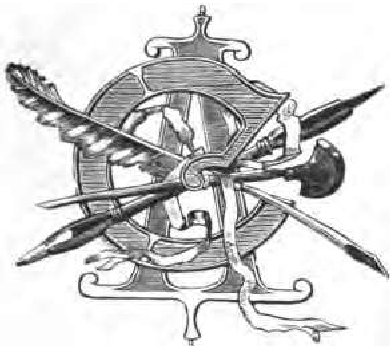
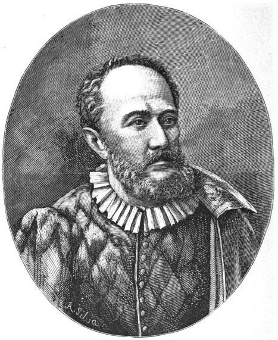
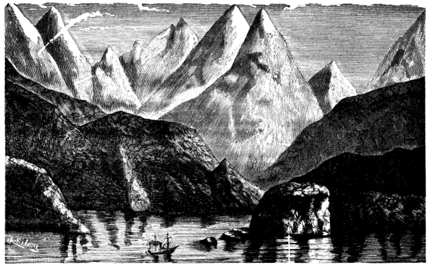
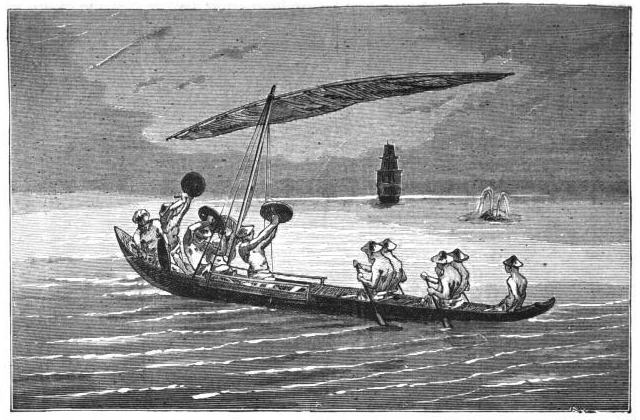

Title: Descobrimento das Filippinas pelo navegador portuguez Fernão de Magalhães
Author: Caetano Alberto da Silva
Release date: June 26, 2009 [eBook #29243]
Most recently updated: January 5, 2021
Language: Portuguese
Credits: Produced by Pedro Saborano (produced from scanned images
of public domain material from Google Book Search)
CAETANO ALBERTO
DESCOBRIMENTO
DAS
FILIPPINAS
PELO NAVEGADOR PORTUGUEZ
FERNÃO DE MAGALHÃES
—
Edição illustrada

LISBOA
EMPREZA DO OCCIDENTE
Largo do Poço Novo
—
1898
DESCOBRIMENTO DAS FILIPPINAS
CAETANO ALBERTO
DESCOBRIMENTO
DAS
FILIPPINAS
PELO NAVEGADOR PORTUGUEZ
FERNÃO DE MAGALHÃES
—
Edição illustrada
LISBOA
EMPREZA DO OCCIDENTE
—
1898
Á memoria de seu tio
O CAPITÃO
Paulo Antonio da Rocha
O. e D.
O Auctor.

Fernão de Magalhães
{9}
Primus circumdidisti me.—Foste o primeiro que me circumdou.—Foi esta a divisa que Carlos V, o imperador, escreveu na esphera que encimou o brazão de Sebastião de Elcano, o afortunado piloto castelhano, que do mar do sul trouxe a S. Lucar de Barrameda, a nau Victoria, com a noticia da descoberta das ilhas Mariannas, tendo dado a volta ao mundo.
Afortunado chamámos a Sebastião de Elcano, e que maior fortuna que colher os loiros que deviam cingir a fronte de outro, a quem a sua má estrella lhe anoitou a existencia depois de o ter guiado á victoria!
E que outro podia ser que um portuguez a devassar os mares, a circundar o globo?!
Que de emprezas arrojadas; que de feitos d'armas; que de acções generosas; que de{10} progressos das sciencias se poderão apontar na historia, que não encontreis á sua frente primeiro entre os primeiros:—o portuguez.
Ah! que até chego a duvidar se estou acordado ou sonhando, quando ouço para ahi tanto pessimismo a amesquinhar o nosso valor, a duvidar, a descrêr de nós proprios!
Não ha talvez outro exemplo de uma nacionalidade assim!
Tão grande; tão prestimosa; tão brilhante, que o seu nome está escripto no mundo inteiro, pelos mares, nas ilhas, nos continentes, nos mais reconditos sertões e até nos astros—como adiante veremos—e que tão pouco julgue de si; tendo-se por fraca quando tanto é o seu valor; julgando-se pobre quando é tão rica, que tem dado prodigamente a outros e tanto ainda lhe resta para si; que tendo uma historia tão gloriosa como outra não ha, pense que não é d'ella que ha-de viver, como se fosse uma Roma cahida, que já não tem a girar-lhe nas veias o mesmo sangue com que escreveu essa historia!
Mas então o que valem os feitos dos nossos soldados, que ainda nos principios d'este seculo se batiam e levavam de vencida as legiões do primeiro capitão, que avassalava o mundo com a sua espada e que veio encontrar, n'este recanto da peninsula, os primeiros revezes da guerra que o levaram por{11} fim a Santa Helena:—O grande Bonaparte!; mas que valem, em nossos dias essas victorias alcançadas em Africa; que dispertam a admiração do mundo; que significa ainda o triumpho que n'este momento as armas portuguezas estão alcançando na Oceania?; o que vale o resurgir das nossas artes, que vão honrar o nome portuguez nos certamens onde concorrem os artistas de todo o mundo, como agora, em Berlim; que gloria nos vem de um dramaturgo portuguez Pinero (Pinheiro), em Inglaterra, alcançar os maiores triumphos nos theatros de Londres, e das suas peças percorrerem toda a America; para que orgulhar-mo-nos dos Luziadas que é um poema eterno porque canta as glorias de um povo de guerreiros e de navegadores; para que serve a expansão d'este paiz pequeno, cujos seus filhos affirmam a victalidade da patria pelas cinco partes do mundo, em colonias tão importantes como as da America, da Africa, da Oceania e da Asia; que importancia tem os nossos homens scientificos que se distinguem nos congressos onde se reunem as summidades da sciencia; o que quer dizer essa lucta da industria portugueza a medir-se com as industrias de outros paizes mais adiantados, supprindo as necessidades de um povo civilisado a que a má administração das suas finanças acarretou uma{12} crise economica; o que importa o renascimento de um paiz que em meio seculo tem realisado todos os progressos que o aproximam das nações mais cultas?
Serão proprios de uma raça degenerada, de um paiz perdido, de uma civilisação extincta, todas estas manifestações de vida, affirmações de força, de lucta pela existencia, sob um sol creador, n'uma terra uberrima, que se desentranha em fructos, que encerra thesouros, em suas minas, fertilisada por abundantes rios, que tem tudo que ha em outros paizes e mais o que elles não teem, que é rica, emfim, de todos os bens que a natureza possue e que Deus parece ter reunido aqui como no paraizo terreal!
E para que foi que este povo, achando-se apertado no solo que as suas espadas conquistaram, se aventurou aos mares a alçar a sua bandeira em terras até então desconhecidas, levantando imperios na India e na America, avassallando novos mundos onde a familia portugueza póde viver como na patria porque são patria tambem de portuguezes.
Mas basta. Não ennumeremos mais o que deveria estar na lembrança de todos os filhos de Portugal, o que nunca deveriam esquecer, porque é esquecerem-se da sua nacionalidade, do que prova a sua existencia{13} e autonomia, do que dá razão da sua vida atravez de todas as vicissitudes porque tem passado.
Pois quê! se Portugal não fosse um élo importante da cadeia que liga a grande familia da humanidade, teria resistido aos embates da sorte que tantas vezes o hão experimentado?
Se elle não tivesse concorrido tão bastamente para a civilisação que o mundo disfructa, como teria atravessado por entre os seculos e luctado contra as ambições de extranhos que tentaram apagar dos mappas as linhas que demarcam as suas fronteiras!
A Polonia succumbe sob o grande collosso porque a sua nacionalidade não coopera na transformação porque o mundo passa ao sahir da idade media; o mesmo acontece á Hungria. Veneza cahiu quando as novas descobertas empanam o brilho da sua navegação e do seu commercio.
Portugal existe e vive porque o ciclo da civilisação de que elle lançou os
primeiros segmentos ainda não se fechou.{14}
{15}
Que serie de heroes encontramos ao folhear da historia, desde os que tentam as primeiras descobertas geographicas até os que fundam imperios como Affonso de Albuquerque.
Como as prôas das naus portuguezas foram deliniando, na immensa tabola do Oceano os fundamentos da civilisação moderna.
Os argonautas precedem os venezianos nas suas viagens; o scandinavo Leif Erik descobre tres seculos antes de Colombo a America do norte e os noruegueses estabelecem-se na Islandia; Roger Bacon e o cardeal Pedro d'Ailly esboçam os primeiros deliniamentos geographicos, mas tudo isto é nebuloso no espirito dos navegadores e cosmographos do seculo XV e faz crescer a vontade de conhecer os caminhos do mar,{16} para chegar áquellas regiões mysteriosas de que se contavam historias da Fabula.
Christovão Colombo e Amerigo Vespucci estudam e fazem calculos para achar o caminho do Oriente de que falla Marco Polo, e o aventuroso genovez despresado na sua patria vem offerecer a Portugal os seus serviços e pedir-lhe naus para ir á descoberta, mas não é mais feliz nas suas pretenções do que o fôra na Italia.
Já Portugal então andava tambem empenhado n'essas emprezas, e o immortal infante D. Henrique lançava, na supposta eschola de Sagres, as bases das grandes navegações e descobertas que iam seguir-se.
Ali se planeava a grande revolução geographica que se ia operar e que seria o fóco de novas revoluções, nas sciencias, nas artes e no commercio, o prologo d'esta civilisação que hoje nos maravilha.
Vasco da Gama, mais feliz do que Colombo encontra o caminho da India. Os seus marinheiros vencem os mares tenebrosos e quebram o encanto das sereias que se rendem ás suas canções maritimas; o indomito Adamastor respeita tão grande audacia e deixa passar adiante a frota que entra alfim no Oceano Indico.
Depois que serie de descobertas se succedem;{17} que trabalho de civilisação de novas gentes se enceta.
Os nossos arsenaes apparelham, sem cessar, naus e caravellas para novos emprehendimentos. Desenvolve-se a febre da navegação; cada portuguez é um navegador. Portugal quasi se despovoa para ir povoar novas terras onde leve a luz da nova civilisação.
Os seus capitães vão continuar para além do Atlantico a sua obra de conquista principiada em Ourique. Eram ainda o mesmo peito d'aço, o mesmo braço esforçado. A flôr da mocidade adiantava-se; os que ficavam tinham inveja dos que partiam. Vieram as emolações, as intrigas da côrte, os despeitos, e quantos d'isto foram victimas, os maus, os bons.
Houve, porém, um homem na côrte de D. Manuel, mais audaz, por ventura que outros, que acariciava a idéa de dar a volta ao mundo por mares ainda não devassados de europeus.
Era a idéa predominante no espirito dos navegadores achar a passagem para o mar do Sul que incurtaria o caminho para a India.
Colombo já o pensára, Balboa estivera a ponto de o realisar, mas o Destino tinha escripto no seu insondavel livro que seria a{18} um portuguez que caberia essa gloria: e esse portuguez, esse homem da côrte de D. Manuel;—foi Fernão de Magalhães, que quizera enflorar na corôa de Portugal uma nova joia de alto valor, mas que o mesmo Destino quiz que a fosse engastar na Corôa de Castella!{19}
Não é proprio dos espiritos aventurosos medir as suas acções pelas regras da prudencia e da boa razão; se assim não fôra deixaria de haver a aventura para só prevalecer a fria reflexão, o que tanto monta como o mundo ter avançado metade do caminho precorrido nos progressos da humanidade: Audentes fortuna juvat.
Não se esperem aventuras donde só dominar a intelligencia sem participar o coração. Os productos da primeira serão admirados e respeitados, mas o que o segundo produzir ha-de espantar e maravilhar.
Raro se reunem estas qualidades e por isso, quando se encontram em um só homem, esse homem será um heroe, porque encherá de beneficios a humanidade.
Comtudo não menos raro é, que a esses{20} homens de espirito e coração privilegiados, a humanidade tenha aberto os braços antes de lhe mover uma guerra de morte. Porque elles vêem mais longe que o vulgar dos espritos, advinhando o que outros não comprehendem, são sempre o alvo da inveja dos maus a espicaçar a aversão dos nescios.
É por isso que em todos os tempos a intriga tem envolvido os grandes homens, deturpando-lhe as intenções, maculando-lhe o caracter, desfazendo de seus meritos, pretendendo annular-lhe as suas obras.
Quantas vezes os ferros de el-rei arroxearam os pulsos dos seus melhores servidores; quantas o desgosto matou homens a quem a posteridade tem levantado monumentos!
N'este labyrinto da Historia, que os historiadores nem sempre tem podido espurgar das paixões, quão difficil é apreciar com justiça o caracter dos homens que n'ella mais preponderam por suas acções e influencia.
É n'esta difficuldade que nos encontrâmos para definir nitidamente o caracter de Fernão de Magalhães, avaliando as rasões que o levaram a deixar a patria e o serviço do seu rei, pelo serviço do imperador das Hespanhas, por um paiz que era o emulo de Portugal, nas conquistas e descobertas.
É fóra de duvida que Fernão de Magalhães deveria ter um caracter independente{21} e ousado, porque outro não se compadecia com o seu espirito aventuroso; que esse caracter não seria facilmente maleavel como não se amoldaria ás adulações e hypocrisias da côrte, parece seguro; mas viria só d'isto o desagrado em que cahiu para com el-rei D. Manuel?
Seria Fernão de Magalhães mais ambicioso que outros, o que não é para admirar, visto que o seu espirito se dilatava tanto pelo que outros não viam, e essa ambição miraria mais á gloria do que ao interesse material? Qualquer das duas seria o bastante para o malquistar com os camaradas e com os cortezãos.
É certo que um dos motivos de desgosto de Magalhães foi el-rei
desattender-lhe o pedido de augmento de pensão, ao voltar de Azamor, onde
combatera valentemente contra os moiros ao lado de João Soares e onde fôra
ferido em uma perna, de que ficou coxeando; mas se o augmento pouco valia
monetariamente, sobrava-lhe em importancia moral porque, como diz Faria e
Sousa, na Asia Portugueza: «Subir cinco reaes em dinheiro, é subir
muitos graus em qualidade», e Lafitau na Europa Portugueza: «...
crescer aqui um real é crescer muito em opinião».{22}
{23}
Quando isto succedeu já Fernão de Magalhães havia illustrado o seu nome em Africa, tendo feito parte de tres expedições, que de Lisboa partiram para aquelles paizes.
A primeira d'essas expedições foi a de 25 de março de 1505, sob o commando de D. Francisco d'Almeida. N'ella se alistou Fernão de Magalhães, contando 25 annos de idade, pois, segundo parece, nascera pelos annos de 1480,[1] deixando os commodos da côrte, onde, segundo diz Argenzola, na{24} Historia de las Malucas e Anales de Aragon, era pagem da rainha D. Leonor e d'el-rei D. Manuel. Preparou-se Magalhães, tanto com as coisas espirituaes como materiaes, para a perigosa viagem, conforme o costume dos tempos. Confessou-se e sacramentou-se e fez testamento, em Belem, a 19 de dezembro de 1504, em que transparece o animo com que o testador se achava para as grandes emprezas, pois recommenda n'aquelle documento—segundo dá fé Diego de Barros Arana, na Vida e Viagens de Fernão de Magalhães,[2]—a sua irmã D. Thereza de Magalhães, que institue herdeira do seu patrimonio como parente mais proximo, casada com João da Silva Telles, gentilhomem da côrte e senhor do castello de Pereira de Sabrosa, que transmitta o seu appellido juntamente com o seu brazão d'armas a seus herdeiros.
Em 1508 encontrava-se já Fernão de Magalhães em Lisboa de volta d'aquella viagem. Havia tomado parte com Nuno Vaz Pereira nas guerras da Costa Oriental da Africa para submetter aquelles povos á soberania de Portugal, como era necessario para a submissão das possessões da India.{25}
Não nos transmitte a historia os feitos d'armas que elle praticou n'esta viagem; é comtudo certo que ella lhe serviu, como as subsequentes, para alargar os seus estudos geographicos, como affirmam todos os escriptores que de Magalhães se tem occupado.
A segunda viagem encetou-a Fernão de Magalhães em 5 de abril de 1508, partindo de Lisboa na frota de Diogo Lopes de Sequeira, composta de quatro naus, com objecto de novas descobertas e conquistas no Oriente. Malaca era uma das terras mais cubiçadas pelas riquezas que tinha, e Sequeira ia encarregado de estabelecer relações com aquelle povo.
A viagem foi bem succedida até Madagascar, mas, proseguindo para Ceylão, um grande temporal obrigou os navios a arribar a Cochim, onde residia o vice-rei da India D. Francisco d'Almeida. Aqui augmentou Sequeira a sua frota com mais um navio e a guarnição com mais 60 homens, largando de Cochim a 18 de agosto de 1509.
Chegou Diogo Lopes de Sequeira a Malaca depois de ter reconhecido a ilha de Sumatra. Foi, porém, desgraçado o fim d'esta viagem, porque os malayos, que a principio receberam bem os portuguezes, não tardou muito que conspirassem contra os nossos,{26} tentando assassinar Sequeira, tentativa de que Magalhães teve conhecimento e conseguiu frustrar, assim como com esforçado valor defendeu seus companheiros de morrerem traiçoeiramente ás mãos d'aquelle povo, salvando quantos poude dos que se encontravam em terra. Entre estes nomea-se Francisco Serrano, ou Serrão, seu companheiro e, parece, parente.
Sequeira voltou para a Europa no melhor navio da frota, tendo mandado queimar dois por falta de gente para os tripular, e ordenando que os outros officiaes e resto de tripulação fossem para Cochim nos dois navios restantes, d'onde depois seguiriam para Portugal.
Assim se observou; porém, a má sorte quiz que os navios se perdessem no archipelago de Laquedivas, desfazendo-se nos recifes de Padua, logrando salvar-se a tripulação para um ilheu deserto, esperando passar a terra povoada.
N'esta conjuntura revela-se a grandeza de animo e o coração generoso de Fernão de Magalhães, porque, embarcando-se os seus companheiros nas lanchas para procurarem terra hospitaleira, elle se ficou com os restantes correndo o risco de, embora perecer, mas nunca os abandonar. Assim esperou que os companheiros lhe enviassem o auxilio{27} necessario, e, chegado elle, se passou a Cananor, onde encontrou Affonso de Albuquerque, que ia de viagem para Ormuz com gente de guerra a dilatar suas conquistas na Persia e seguir até o mar Roxo e Egypto.
Recebeu Affonso de Albuquerque a Fernão de Magalhães e aos companheiros, que embarcou em sua armada, os quaes o ajudaram a submetter Goa e a dominar a costa de Malabar, e depois a tentar nova guerra contra Malaca, que é um dos feitos mais gloriosos das armas portuguezas no Oriente e o inicio de novos descobrimentos como os das ilhas de Banda e das Molucas, centro das ricas e procuradas especiarias.
No regresso d'esta viagem (1512), em que tanto se distinguiu Fernão de Magalhães, teve este em recompensa de seus serviços o cargo de moço fidalgo do paço, com a pensão de mil réis mensaes com moradia. Esta pensão lhe foi melhorada pouco tempo depois, o que muito lhe accrescentou o valor e importancia na côrte, como se deprehende dos documentos achados por Muñoz no archivo de Lisboa.
A recompensa dada por el-rei D. Manuel a Fernão de Magalhães foi incentivo bastante para o bravo portuguez voltar á guerra, procurando na sorte das armas augmentar{28} o lustre do seu nome já então galardoado.
Na Africa feria-se uma guerra contra mouros que se batiam denodadamente com os portuguezes. Não menos que para a India se dirigiam as vistas do rei afortunado para aquelle campo das nossas conquistas, e assim mandou aprestar uma grande armada, composta de quatrocentos navios,—segundo diz Faria e Sousa, na sua Africa Portuguesa,—em que embarcou dezenove mil homens de guerra, sob as ordens de seu sobrinho D. Jayme de Bragança.
N'esta armada partiu Fernão de Magalhães, emprehendendo a sua terceira viagem, em 1513; e não foi esta menos gloriosa para o seu nome que as duas primeiras; pois que combatendo ao lado de João Soares contra aquelles povos semi-barbaros, occupou a praça de Azamor e defendeu-a valorosamente contra as tropas dos reis de Fez e de Mequinez. N'esta guerra se excedeu tanto em valor que, a par do ferimento que recebeu em uma perna, de que ficou coxeando, lhe foi dado o posto de quadrilheiro-mór, ou capitão de uma companhia; e perseguiu de tal modo os mouros que aprisionou oitocentos e noventa d'estes e duas mil cabeças de gado.
Segundo diz Barros, esta façanha foi origem de desgostos para Fernão de Magalhães,{29} porque na repartição da presa levantaram-se tantas reclamações e intrigas que chegaram aos ouvidos de el-rei D. Manuel, indispondo este monarcha contra o heroe de Azamor.
Quanto de inveja e de mal soffridas ambições andariam n'isto, é o que não podemos affirmar; mas, a julgar pelos resultados, mui negras deviam ser as côres com que apresentaram a el-rei o quadro do procedimento de Magalhães, para que este, depois de se justificar com documentos, provando a falsidade das arguições ainda assim não conseguisse recompensa regia dos seus serviços e ainda menos perdão da supposta culpa.
Ouçamos o que sobre este ponto diz Gaspar Correia, nas suas Lendas da India, n'aquella linguagem do tempo, e que vamos transcrever quanto possivel approximada e intelligivel para a maioria dos leitores de agora. «... Fernão de Magalhães, vindo ao reino, allegando a el-rei seus serviços, pediu em recompensa lhe accrescentasse cem réis de moradia por mez, o que el-rei lhe denegou, por não cahir em sua graça, ou porque estava destinado que assim havia de ser. Fernão de Magalhães, aggravado, porque muito o pediu a el-rei e elle lh'o não quiz fazer, lhe pediu licença de ir viver para quem lhe fizesse mercê e alcançasse mais fortuna{30} que com elle, ao que el-rei lhe disse, fizesse o que quizesse, e lhe quiz beijar a mão e el-rei lhe a não quiz dar.»
Não se pense d'aqui que a pureza dos costumes do tempo fosse tal que, admittindo que Magalhães fosse menos escrupuloso no seu procedimento, não lhe pudessem ser levados em conta os serviços prestados ao reino, para lhe attenuar a falta; porque é certo que a outros, não mais prestantes nem menos ambiciosos, a munificencia do rei encheu de honras e prebendas, apesar das faltas commettidas.
As injustiças são de todos os tempos, sem que por isso se deva sempre condemnar quem as comette; porque muitas vezes são involuntarias e apenas resultado de tramas bem urdidos por terceiros.
Foi, provavelmente, o que aconteceu com Fernão de Magalhães, que tanto se sentiu de ver-se injustamente desattendido, que renegou da sua nacionalidade de portuguez para offerecer os seus serviços a Castella.
Não se fala da lucta que elle travaria comsigo mesmo para levar a cabo esta resolução; mas é bem de suppôr seria enorme, se tivermos em vista quanto devia repugnar a um portuguez o trocar a sua nacionalidade pela de uma nação, que sempre nos disputou a supremacia, quer nas conquistas{31} e descobrimentos, quer na absorpção d'esta gloriosa patria portugueza. Enorme lucta, sem duvida, a que se levantou no espirito de Fernão de Magalhães; mas como resistir-lhe, se essa resistencia seria a annullação dos seus planos audaciosos, que não eram a satisfacção de um capricho, vaidade impertinente, ou ambição injusta.
O escudo das suas armas ia ser picado, o nome da sua familia execrando, apontado ao desprezo; e elle estimava tanto os pergaminhos de seus antepassados, o seu nome, a sua patria, que, ao apartar-se d'ella pela primeira vez, recommendara a seus herdeiros, nas desposições testamentarias, que lhe guardassem o seu escudo de armas e o transmitissem aos seus descendentes.
Enorme lucta, sem duvida; mas ainda maior que essa lucta era o ideal de Fernão de Magalhães, que antesonhava o grande progresso geographico que realizaria com a sua viagem de circumnavegação do globo, prestando ao mundo um alto serviço e cobrindo o seu nome de tanta gloria, que faltando á religião da patria, ella não se deshonraria a final de o ter por filho.
Deshonra e vergonha seria se Fernão de Magalhães houvesse cruzado os braços ante a injustiça dos homens, rojando-se submisso aos pés de um throno que o desprezava. Encontrando-se{32} com animo para a audaz empresa que planeava, pouco lhe devia importar o ser portuguez ou de outra qualquer nacionalidade; essa preoccupação seria futil no meio da sua grandiosa obra. Elle tinha fatalmente que realizar os seus planos. Se a patria lhe negava os meios de os levar a effeito, elle iria por esse mundo fóra procural-os até encontrar quem lh'os facultasse; e foi e encontrou!
Se para a Hespanha Fernão de Magalhães conquistou terras, para Portugal conquistou a gloria do seu nome. Essas terras poderão um dia deixar de ser de Hespanha; mas a gloria do nome de Fernão de Magalhães é que nunca deixará de ser de Portugal!{33}
[1] Não está bem determinada a data do nascimento de Fernão de Magalhães; é, todavia, certo que elle nasceu na aldeia de Sabrosa, de Traz-os-Montes e que seu pae se chamava Pedro, sendo da quarta nobreza de Portugal, ou fidalgo de cotta d'armas e geração que tem insignias de nobreza, tendo a sua familia escudo d'armas enxequetado, ou em quadradinhos como taboleiro de xadrez.
[2] Este testamento só foi conhecido em 1855, segundo diz Arana, que d'elle teve conhecimento por uma copla de Ferdinand Diniz, que a houve de um herdeiro de Magalhães.
Mediaram cerca de tres annos entre os successos que levaram Fernão de Magalhães a renegar a nacionalidade portugueza, e a sua entrada em Sevilha a 20 de outubro de 1517.
Este tempo consumiu-o em estudos de cosmographia e nautica, escrevendo tambem a sua obra em castelhano sobre as terras que tinha visitado, á qual deu o titulo: Descripcion de los reinos, costas, puertos e islas que hai en el mar de la India oriental i costumbres de sus naturales: su gobierno, religion, comercio i navegacion, i de los frutos i efectos que producen aquellas vastas regiones, con otras noticias mui curiosas; compuesto por Fernando Magallanes, piloto portuguez que lo vio i anduvo todo.
Esta obra nunca foi publicada, apesar d'isso{34} extrahiram-se d'ella algumas copias, que alteraram muitos pontos essenciaes das viagens de Magalhães, o que bastante deprecia o seu conhecimento, e Diego de Barros Arana, diz que viu em Madrid uma d'essas copias, de letra do seculo XVI que possuia o erudito bibliophilo D. Paschoal de Gayangos.
Aos estudos que Fernão de Magalhães fazia, ora em Lisboa ora no Porto, onde tinha mais persistencia, reuniu o conhecimento de Ruy ou Rodrigo Faleiro da Covilhã, que segundo diz Oviedo, na sua Historia jeneral de las Indias, era homem de grandes conhecimentos de cosmographia, astrologia e outras sciencias. Faleiro foi de grande auxilio para Magalhães porque comprenetrando-se do seu pensamento e dos seus planos associou-se calorosamente á empreza, juntando-se-lhe Francisco Faleiro, irmão de Rodrigo e que tambem era homem sabido em coisas de nautica.
Magalhães já não se encontrava sosinho com a sua idéa, e isto mais o animou a proseguir, nos meios de levar á pratica o audacioso plano.
Sem navios nem meios para os adquirir e aprestar, sem nada poder esperar do rei que o despresara, tinha fatalmente que recorrer a Castella, tanto mais, que para realisar a sua viagem, não querendo abeirar-se{35} de terras portuguezas, precisava tocar em terras sujeitas á Hespanha e onde não era permittido estabelecer trafico sem auctorisação do rei de Castella.
A Carlos V ia offerecer os seus serviços e descobrir os seus planos, pedindo que lhe fornecesse os meios de os realisar. Mais tarde havia de Camões cantar, nos seus immortaes Luziadas, os feitos de Magalhães:
Eis-aqui as novas partes do Oriente,
Que vós outros agora ao mundo daes,
Abrindo a porta ao vasto mar patente,
Que com tão forte peito navegaes.
Mas é tambem razão, que no Ponente
D'um Lusitano um feito ainda vejaes,
Que de seu Rei mostrando-se aggravado,
Caminho ha de fazer nunca cuidado.
Vedes a grande terra, que contina
Vae de Callisto ao seu contrario polo,
Que soberba a fará a luzente mina
Do metal, que a côr tem do louro Apollo;
Castella, vossa amiga, será digna
De lançar-lhe o collar ao rudo collo:
Varias provincias tem de varias gentes,
Em ritos e costumes differentes.
Mas cá onde mais se alarga, ali tereis
Parte tambem c'o pao vermelho nota:
De Sancta Cruz o nome lhe poreis;
Descobril-a-ha a primeira vossa frota.
Ao longo d'esta costa, que tereis,
Irá buscando a parte mais remota
O Magalhães, no feito com verdade
Portuguez, porém não na lealdade.{36}
{37}
Abandonando a patria e o rei, que tão mal apreciara os seus serviços, Fernão de Magalhães se foi a Sevilha, onde, ainda antes, talvez, de tratar dos negocios da sua empreza, se lhe prendeu o coração a uns olhos negros e pestanudos de uma gentil sevilhana, D. Beatriz, filha de Diogo Barboza.
O bravo soldado que combatera na India e na Africa; o arrojado navegador que dominara a porcella e queria devassar ignotos mares que a espada de Balboa havia desafiado, como diz Alexandre de Humboldt—«com a espada na mão mettia-se á agua até aos joelhos, e pensava apossar-se do mar do sul em nome de Castella»—o heroe de Azamor, o homem forte que só parecia viver para a audaz empreza da circumnavegação do globo, rendeu-se aos encantos{38} de uma mulher, que soube conquistar-lhe o coração e a quem elle, pouco tempo depois de ter chegado a Sevilha, dava a mão de esposo.
Tambem d'este enlace lhe veio auxilio para os seus planos, porque Diogo Barbosa, sogro de Fernão de Magalhães, era, como diz Gaspar Correia: «... homem principal, que sabia navegar no mar, porque era muito entendido na arte de piloto e era esperico—o que quer dizer spherico ou cosmographo, que sabe da sphera.
Effectivamente, segundo Faria e Sousa, na Asia Portugueza e Lafitau na Histoire des découvertes et conquetes des portugais, Diogo Barboza fizera parte de uma grande expedição que el rei D. Manuel mandou aos mares da India, em 1501, indo capitaniando um dos navios da frota de João da Nova, a qual derrotou uma esquadra de mouros que traficavam em Calcuta e descobriu as ilhas da Conceição e de Santa Helena. Este Diogo Barboza deixou o serviço de Portugal e se foi a Castella, onde encontrou protecção em D. Alvaro de Portugal, que havia passado aquelle paiz, quando seu irmão, o duque de Bragança foi decapitado em Evora por ordem de El-rei D. João II (1483). D. Alvaro foi recebido pelos reis catholicos como parente, e lhe deram todas as honras{39} inherentes a tão alto personagem, confiando-lhe os cargos de presidente do conselho dos reis e de alcaide do alcaçar de Sevilha, segundo diz Lopez de Haro, no Nobiliario de España e Ortiz de Zuniga, nos Anales de Sevilla.
Tão alta protecção teve a sua influencia em Barboza, que foi elevado a commendador da ordem de S. Thiago e logar tenente do alcaide do alcaçar de Sevilha, e assim collocado, casou com a filha de uma das principaes familias de Sevilha, D. Maria Caldeira.
Viveu Fernão de Magalhães com esta familia durante o tempo que esteve n'aquella terra e d'ahi lhe veio proveito, porque alem da protecção do sogro travou relações com Duarte Barboza sobrinho de Diogo, que tambem viajara para a India e explorara aquelles mares, como prova a relação das suas viagens, publicada, em parte, na, Navigazione e viaggi, do colleccionador italiano J. B. Ramusio, publicado em 1554, e completa, na Collecção de noticias para a historia e geographia das nações ultramarinas, publicado em Lisboa, em 1813.
Como se vê, Fernão de Magalhães ia juntando elementos de estudo que lhe aproveitavam, ao mesmo tempo que alcançava boas protecções para levar a cabo a sua empreza.{40}
Assim se dirigiu em Sevilha, a uma casa chamada da contratação em que se tratavam os negocios maritimos e a que Gaspar Correia se refere nas suas Lendas da India: «Em Sevilha tinha o imperador a casa da contratação, com regedores da fazenda que tinham grandes poderes e trafego de navegação e armadas. Fernão de Magalhães forte de seu saber e com muita vontade de anojar el-rei de Portugal, tratou com os regedores da casa da contratação e disse-lhes: que Malaca e Moluco, ilhas que creavam o cravo, eram do imperador pelas demarcações que entre ambos havia e por isso el-rei de Portugal não tinha direito de possuir estas terras: e que isto elle sustentava em presença de quantos doutores que o contestassem, pelo que obrigaria a sua cabeça. Os regedores lhe responderam que sabiam bem que elle fallava verdade; mas que o imperador não mandava lá seus navios, porque não podia navegar em mares da demarcação de el-rei de Portugal. Ao que, lhes disse Fernão de Magalhães: Se me derdes navios e gente eu navegarei para lá sem tocar em mar ou terra de el-rei de Portugal. E se assim o não fizesse lhe cortassem a cabeça. Os regedores muito satisfeitos assim escreveram ao imperador o qual lhes respondeu que sentia prazer com o dito e muito mais sentiria com o{41} feito: que tudo fizessem os regedores, guardando o seu serviço e as coisas de el-rei de Portugal, em que não tocassem e antes tudo se perdesse. Com esta resposta do imperador fallaram a Magalhães o qual continuou a affirmar o que dizia, de que navegaria e ensinaria o caminho por fóra dos mares de el-rei de Portugal; que lhe déssem os navios que elle pedisse, gente e artilheria e o necessario, que elle cumpriria o que dizia e descobriria novas terras na demarcação do imperador e traria oiro e cravo e canella e outras riquezas; o que ouviram os regedores desejando muito fazer tão grande serviço ao imperador, qual o de descobrir esta navegação, e para terem maior certeza, reuniram pilotos e espericos para sobre isto discutirem com Magalhães, que a todos deu suas razões e todos concordaram no que elle dizia e confirmaram que era homem mui sabido.»
Os mares e terras da demarcação do imperador, a que se referia Fernão de Magalhães, eram os comprehendidos na linha divisoria que o Papa Alexandre VI marcára a pedido dos reis catholicos afim de evitar conflictos entre os reis de Castella e de Portugal, pela diligencia em que estas duas nações andavam de descobrir terras desconhecidas.
A linha traçada pelo Papa, ia de um polo{42} ao outro, 100 leguas ao occidente dos Açores, dando aos hespanhoes a posse das terras que descobrissem para esta parte e aos portuguezes as que descobrissem e conquistassem para o oriente.
A bulla de Alexandre VI que isto concedia começa assim: De nostra mera liberalitate, et ex certa sciencia ac de Apostolicæ potestates plenitudine etc.
De nossa mera liberalidade, sciencia certa e plenitude do nosso poder Apostolico etc.
Depois d'esta demarcação os reis de Portugal e os de Castella acordaram em fixar a linha divisoria mais 270 leguas ao occidente, pelo que diz Muñoz na Historia del Nuevo Mundo.{43}
As declarações feitas por Fernão de Magalhães na Casa da Contratação de Sevilha, não foram sufficientes para esta appoiar abertamente os projectos do ousado navegador, e se não fôra a influencia de João de Aranda, que se empenhou para que tivesse bom seguimento a proposta de Magalhães, talvez este não lograsse ainda o seu intento.
João de Aranda, era feitor da Casa da Contratação, de animo propenso a emprezas arriscadas e por isso comprehendeu bem todo o alcance da empreza de Magalhães e tanto que prometteu protejel-a mediante alguma parte dos lucros que d'ella resultassem.
Foi n'esta occasião que chegaram a Sevilha os dois irmãos Faleiros os quaes não concordaram com o que Fernão de Magalhães havia tratado com João de Aranda, muito principalmente Rodrigo Faleiro que era{44} homem de caracter mais desconfiado e irritavel, e que se considerava a alma da empreza de que Magalhães seria o elemento pratico.
Importantes deviam ser os estudos de Rodrigo Faleiro, para que Magalhães se sujeita-se ás suas exigencias, transegindo com elle tanto quanto possivel, no que bem mostrava a generosidade de animo a par de melhor conhecimento pratico do mundo, para debelar as difficuldades que se levantavam no seu caminho.
De tal arte soube conciliar tudo para chegar ao seu fim, fazendo boas as negociações que havia entabolado com Aranda, firmando, emfim, um contracto em Valladolide a 23 de fevereiro de 1518, perante o escrivão de suas altezas, Diogo Gonçalves de Sant'Iago, em que elle, Magalhães e Rodrigo Faleiro dariam a oitava parte do proveito que resultasse em dinheiro, ou renda, ou officio ou em outra qualquer coisa que seja, de qualquer quantidade ou qualidade dos descobrimentos que se propunham levar a cabo.
Não estava ainda bem firme no throno das Hespanhas o principe Carlos d'Austria, o que naturalmente preoccupava o jovem monarcha, não sendo por isso muito favoravel a occasião para se occupar das pretenções de Magalhães.
Entretanto o navegador portuguez escudado{45} com as protecções que grangeára, sempre conseguiu chegar á presença do monarcha e fazer exposição dos seus planos, tendo primeiro apresentado aos ministros do rei esses mesmos planos, apresentação para a qual muito influiu o bispo de Burgos D. João Rodrigues da Fonseca.
É para notar que este bispo de Burgos, que combatera tenazmente os planos de Colombo, de Balbôa e de Cortez, se apresentasse na côrte protegendo Magalhães com decidido empenho! Não nos diz a historia se n'esta protecção iria interesse pessoal, ou a convicção da utilidade pratica dos projectos de Magalhães, sendo, todavia, certo que o caracter do bispo não era dos de melhor quilate.
Em todo o caso percebe-se que Fernão de Magalhães soubera pôr o bispo de seu lado, como já soubera conciliar as divergencias levantadas por Faleiro.
Mas ha ainda mais.
Carlos V não accedeu tão de prompto, como a muitos parecerá, depois da resposta que dera aos regedores da Casa de Contratação, ás propostas de Fernão de Magalhães, e antes levantou duvidas, desconfianças sobre a auctoridade em que o ousado portuguez firmava os seus planos.
Era de esperar.
Mas Fernão de Magalhães não se desconcertou.{46} Soccorreu-se das observações feitas em suas viagens, do que havia estudado e de quanto adquirira de Faleiro; por fim citou uma carta geographica, existente em Portugal, levantada por Martinho de Bohemia em que marcava a communicação entre o mar do norte e o do sul, e com tanta proficiencia discutiu os seus planos que conseguiu desvanecer todas as duvidas no espirito de Carlos V, acabando este por lhe conceder quanto pedia, mandando lavrar o contracto, o qual se celebrou a 22 de março de 1518. Por este contracto foi dado a Fernão de Magalhães e a Faleiro o privilegio de, por espaço de dez annos, a nenhum outro navegador ser concedido ir a descobertas pelo mesmo caminho que elles. Seriam postos á sua disposição cinco navios, armados de artilheria, e guarnecidos com 234 homens, com mantimentos para 2 annos e mais dava o commando dos ditos navios a Fernão de Magalhães e a Faleiro e a vigesima parte dos lucros que houvesse d'estes descobrimentos, conferindo-lhe o de adiantados e governadores das terras que descobrissem a elles e seus descendentes. Alem d'isto ainda Carlos V deu o titulo de capitães d'esta esquadrilha a Magalhães e a Faleiro, com 50:000 maravedis de soldo pagos pela Casa da Contratação, com toda a auctoridade em terra e no mar, etc.{47}
Não contente ainda com o que tinha concedido, Carlos V, pouco depois de celebrado aquelle contracto, ordenou que fosse augmentado o soldo dos dois capitães com mais 8:000 maravedis e 30:000 para ajuda de custo; mandando tambem que se abreviasse quanto possivel o armamento dos cinco navios.
Fernão de Magalhães ia triumphando com a sua idéa, mas não tardou que novas difficuldades se levantassem, e d'esta vez era de Portugal que vinham.
Soube-se na côrte de D. Manuel do que se estava passando em Hespanha com os dois portuguezes, e calculando-se quanto poderiam perigar as possessões portuguezas na India, se Fernão de Magalhães levasse por diante seu intento, necessario era combatel-o.
Era embaixador portuguez em Hespanha D. Alvaro da Costa, que ali fôra pedir a mão da infanta D. Leonor para el-rei D. Manuel. Sob este pretexto e quantos mais se podem imaginar, representou contra as concessões feitas por Carlos V a Fernão de Magalhães, e com tal arte se houve que o monarcha das hespanhas se abalou, chegando a ponto de quasi revogar o que estava contractado.
Foi ainda o citado bispo de Burgos que demoveu todas as duvidas.
Fernão de Magalhães iria finalmente á descoberta.{48}
{49}
Decorreram seis mezes entre a assignatura do contracto e a partida de Magalhães. Foram seis mezes de luctas para o ousado portuguez, em que se lhe levantaram difficuldades por todos os lados, desde aquellas que Rodrigo Faleiro lhe criou com o seu genio irascivel, até ás que o povo de Sevilha, instigado pelos agentes portuguezes para impedirem a empreza, oppôz, tentando destruir os navios que estavam a construir para a viagem, e contra a vida de Magalhães, desconfiando da lealdade do seu procedimento.
Não foi menos importante a falta de dinheiro para occorrer ás despezas da expedição, falta que suppriu Christovão de Haro e Affonso Gutierres a que tambem acudiram{50} alguns negociantes de Sevilha a instancias do bispo de Burgos, devotado protector da empreza.
Faleiro, investido de poderes eguaes aos de Magalhães e de genio mui differente d'este, foi impossivel dirigir os trabalhos de commum accordo e a tal ponto chegou a desintelligencia entre os dois, que Carlos V sem querer melindrar nem um nem outro, mas vendo a impossibilidade de se consertarem, determinou por uma real cedula datada de 26 de julho de 1519, que Faleiro ficasse em Sevilha tratando de aprestar uma outra expedição, que seguiria a Magalhães, e que o capitão portuguez partisse com o exclussivo de unico commandante superior da esquadrilha.
Tudo se aprestou alfim: a esquadrilha que ia a descoberta compunha-se de cinco navios, de que Fernão de Magalhães era o almirante. O primeiro d'aquelles navios era o Trindade, em que ia Magalhães; o segundo Santo Antonio commandado por João de Cartagena, que era ao mesmo tempo vedor da armada e tinha o titulo de adjunto de Fernão de Magalhães; o terceiro, Conceição do commando de Gaspar de Quesada; o quarto, Victoria tendo por commandante Luiz de Mendonça, que era tambem o thesoureiro da armada; o quinto, Santiago, que{51} era o mais pequeno, commandado pelo piloto João Serrano.
Foi a 10 de agosto de 1519 que a esquadrilha levantou ferro, e descendo o Guadalquivir, veiu fundear no porto de S. Lucar de Barrameda, para quarenta dias depois, a 20 de setembro, soltar as velas ao vento, em monção favoravel e aventurar-se por esses mares fóra, sem temor dos perigos, á procura da passagem para o mar do sul.
Ia na expedição um interprete indio malayo, christão, que Magalhães levava para melhor se entender com os povos que esperava encontrar; tambem ia Duarte Barbosa cunhado de Magalhães, que já conhecia a Asia, e o italiano Antonio Pigaffetta, que foi o chronista da viagem. Além d'este iam outros extrangeiros, como francezes, flamengos e um inglez, todos fazendo parte da companha, soldados, marinheiros, artifices etc.[3]
As caravellas, com suas proas alterosas, lá iam cortando o mar, impellidas pelo vento rijo que lhe empavesava as latinas. Era um dia de sol, como só os ha na peninsula Iberica, e os seus raios de ouro reflectindo-se nas aguas centuplicavam a luz que illuminava aquelle quadro, ao mesmo tempo que{52} alentavam a alma dos valorosos navegantes, não deixando esfriar o enthusiasmo que animava todos: os que partiam e os que em terra lhe dirigiam as ultimas saudações.
A epocha era d'aquellas aventuras que melhor iam a estes povos, hespanhoes e portuguezes que por egual andavam empenhados nas descobertas.{53}
[3] Vida e Viagens de Fernão de Magalhães por Diego de Barros Arana.
Que trabalhosa viagem antes de chegar ao porto desejado! Cortada de temporaes e de discordias, que de uns e outras não faltaram para experimentar o animo do ousado navegador.
Logo nos principios da rota Fernão de Magalhães teve que pôr a ferros a João de Cartagena, que se sublevara contra elle por motivo de Magalhães mudar de rumo sem o consultar, sendo Cartagena seu adjunto.
A 13 de dezembro dava fundo, na bahia do Guanabára ou Rio de Janeiro, a esquadrilha.
É curioso o que conta Pigaffetta do negocio que fizeram com os indigenas durante o tempo que ali permaneceram os navios.
Diz elle:{54}
«Aqui fizemos provisão de gallinhas e de patatas, um fructo semelhante ás pinhas, mas muito doce e exquisito, canna doce, carne de anta semelhante á de vacca. Fizemos excellentes negocios. Por um anzol ou por uma faca davam-nos cinco ou seis gallinhas; dois ganços por um pente; por um espelhinho ou um par de tesouras obtinhamos uma porção de peixe suffeciente para alimentar dez pessoas; por um guiso ou uma fita traziam-nos os indigenas uma canastra de patatas. Por preços tão subidos como estes trocámos as figuras dos naipes de cartas: por um rei deram-me seis gallinhas e os indios cuidavam fazer um excellente negocio.»
Depois de um descanço de quatorze dias no Guanabára de novo se pôz a esquadrilha ao mar seguindo rumo parallelo á costa até o Cabo de Santa Maria, na embocadura do Rio da Prata, onde entrou a 10 de janeiro de 1520, para reconhecer as margens, distinguindo nas extensas planicies uma elevação a que os navegantes chamaram Monte-Vidi e que mais tarde se denominou Montevideo.
A 14 de fevereiro deixou Fernão de Magalhães o Rio da Prata e seguindo a linha da costa foi navegando atravez os temporaes até o porto de S. Julião, onde arribou{55} a 31 de Março, para ali invernar, pois era chegada a estação das chuvas.
Eram os primeiros navegadores europeus que chegavam aquelle porto, que de resto encontravam despovoado, e sem viveres de que se podessem fornecer!
Havia decorrido seis mezes que tinham largado de S. Lucar de Barrameda.
A confiança que Fernão de Magalhães conseguiu inspirar ao rei de Castella, a todos que concorreram para a realisação da sua viagem e até aos proprios que o acompanharam, não permaneceu firme, depois d'aquelles seis mezes decorridos sem resultado obtido.
Parece fóra de duvida, que o unico verdadeiro crente na empreza era Magalhães, o que não admira porque era elle quem melhor conhecia o plano tantos annos acariciado na mente.
Os que o acompanhavam não tinham decerto a mesma força de espirito que elle, o bastante para lhe esfriar o enthusiasmo, para lhe quebrar o animo. Foi assim que, chegados áquelle ponto, sem terem alcançado o termo desejado, entenderam por melhor desestir, reclamando de Magalhães que, ou alargasse as rações que tinham sido cerseadas, ou voltasse para Castella.
Fernão de Magalhães, porém, não era{56} homem que se acobardasse com aquella imposição, e protestou que iria até ao fim embora sacrificasse a sua vida no cumprimento do dever.
Entretanto os capitães das caravellas não se conformaram com aquella resolução, e muito particularmente Gaspar de Quesada, commandante da Conceição, o qual concebeu um plano de revolta contra o chefe da esquadrilha.
Pela noite, quando a escuridão mal deixava distinguir as embarcações dispersas no porto de S. Julião, uma lancha largou de bordo da Conceição; ia n'ella Quesada com trinta homens armados dispostos a dar assalto á caravella Santo Antonio. Os marinheiros remavam mansamente fazendo o menor ruido possivel, para não despertarem a attenção de alguem que os podesse ouvir dos outros navios.
Gaspar de Quesada soltara João de Cartagena[4] que levava preso a bordo, o qual ficou á testa da caravella. O seu plano era apoderar-se da caravella Santo Antonio, prender o commandante Alvaro de Mesquita e com a força d'estes dois navios reduzir os outros á sua obediencia até á Trindade, impondo-se{57} assim a Fernão de Magalhães, a quem queria obrigar a tratar com mais consideração os capitães e pilotos da esquadrilha.
Não foi difficil o assalto: as poucas sentinellas da Conceição foram tomadas de surpreza emquanto Quesada com meia duzia dos seus homens, se dirigiu ao alojamento de Alvaro de Mesquita para o prender. Entretanto o mestre João Elorriaga déra pelos assaltantes e correndo em soccorro do seu commandante, travou uma sangrenta lucta em que ficou ferido. Quesada vibrou-lhe quatro valentes punhaladas num braço que o prostraram, conseguindo por fim pôr a ferros Alvaro de Mesquita e arvorar-se elle cammandante da Santo Antonio.
Luiz de Mendonça ia feito com Quesada, pelo que os revoltosos tinham tres navios, achando-se em maioria para imporem a lei a Magalhães, que áquella hora dormia, ainda que talvez pouco tranquillamente, na sua caravella Trindade.
De manhã é que Magalhães soube da sublevação dos tres capitães porque logo da Victoria sahiu uma lancha com um emissario, que veio notificar ao chefe da esquadrilha a resolução em que estavam, de não continuarem a ser tratados como até ali, de obedecerem cegamente ás ordens d'elle, mas sim resolverem tudo de commum accordo.{58}
Isto que á primeira vista póde parecer justo, não o seria nas circumstancias que se davam, porque importava o malogro da empreza de Magalhães. Os revoltosos não queriam continuar a viagem que tinham por temeraria, descrendo de encontrar a passagem para o mar do sul, emquanto que Fernão de Magalhães pensava exactamente o contrario, e d'este modo era-lhe impossivel transijir, tornando-se imperioso apellar para toda a sua auctoridade, empregando a força para submetter os que assim lhe faltavam á obediencia.
A força, porém, do chefe achava-se reduzida e em minoria, mas a inferioridade numerica nunca acobardou espiritos fortes e da estatura moral de Fernão de Magalhães, que nascera, sem duvida, para dominar e não para ser dominado.
Era arriscada a empreza; tanto mais razão para não recuar. Se os seus capitães vallessem tanto como elle não recuariam como elle não recuava perante os perigos. Logo a superioridade de Magalhães era manifesta e de molde a não se intimidar com a attitude dos revoltosos.
Magalhães respondeu á notificação que lhe fizeram, ordenando que viessem a bordo da Trindade conferenciar com elle os tres chefes da revolta. Esta ordem, porém, não{59} foi obedecida, tendo em resposta, que viesse Magalhães a bordo da Santo Antonio, onde todos se reuniriam para resolver.
Não havia que hezitar. Estava lançada a luva, e Fernão de Magalhães nem sequer pastanejou para a levantar. Fez tambem o seu plano para dar o golpe decisivo.
O alguasil Gonçalo Gomes de Espinoza era homem valente e decidido; pois iria elle e mais seis homens de confiança a bordo da Victoria, levar a ordem para Luiz de Mendonça se apresentar immediatamente no navio do chefe.
Levava instrucções particulares que haviam de permittir bom exito d'esta vez.
Espinoza acercou-se com a sua chalupa da Victoria e saltando no navio logo veio o commandante a quem elle entregou a ordem que levava. Luiz de Mendonça leu essa ordem, não sem occultar a desconfiança que lhe inspirava, mas emquanto a lia meditando sobre a resposta a dar, Espinoza tirou de um punhal que levava escondido e com elle lhe atravessou o pescoço. Luiz de Mendonça baqueou e um outro golpe descarregado na cabeça por um dos companheiros de Espinoza, deixou-o completamente morto sobre a tolda.
Ao mesmo tempo que se dava esta scena tragica, atracava á Victoria outra chalupa em{60} que vinha Duarte Barboza com mais quinze homens armados, que Magalhães mandava, como prevenção para assegurar o triumpho dos que se tinham ido expor a uma lucta desegual com a gente d'aquelle navio.
Não foi, felizmente, preciso derramar mais sangue, pelo que diz Lopez de Recalde, na carta escripta á vista do processo que se instruiu em Sevilha em 1521, e que Herrera refere. Morto o commandante, a tripulação submetteu-se sem resistencia, e no mastro da Victoria foi içada a bandeira do triumpho.
Restava submetter Cartagena e Quesada, mas a sorte de Luiz de Mendonça influiu tanto no espirito dos dois capitães, que lhes quebrou o animo para tentarem desforra, em presença da firmeza do chefe.
Limitaram-se a tentar a retirada para Castella; mas nem isso conseguiram, porque as tres caravellas que estavam fieis a Magalhães, foram, por ordem d'este, fundear na entrada do porto, tirando aos revoltosos a esperança de poderem sahir com os seus navios sem experimentarem a artilheria dos contrarios.
Concertaram então outro plano.
Quesada tinha, como ficou dito, preso a bordo Alvaro de Mesquita, que era primo co-irmão de Magalhães, e pensou de o soltar{61} para servir de medianeiro entre elle e o chefe da esquadrilha, afim de obter uma capitulação favoravel.
Alvaro de Mesquita, porém, logo desenganou Quesada, de que seu primo não transigiria; conhecia-o bem para esperar o contrario e toda a tentativa de conciliação seria completamente inutil.
Assim descoraçoados os dois capitães revoltosos, apellaram novamente para a retirada, projectando sahir do porto n'aquella noite, pondo na prôa de um dos navios o Mesquita, para d'ali parlamentar com Magalhães, segundo diz Herrera.
Pela noite a Santo Antonio levantou ferro e aproou para sahida, aproveitando a hora da maré, desferrando pano pouco a pouco, debaixo de grande silencio, com as maiores precauções. O vento, no porto soprava brando e só mais para o largo é que o mar, encrespado, indicava vento mais rijo.
Vencer a sahida era tudo, porque depois com boa refrega e pano largo, ganharia distancia não sendo facil colhel-a nenhum dos navios da esquadrilha.
Á cautela, Alvaro de Mesquita fôra mandado para a proa por Quesada, para d'ali parlamentar com Magalhães, se da Trindade dessem pela sahida da Santo Antonio, como era de prever. De facto assim aconteceu,{62} mas o modo como da Trindade vieram á fala não deu tempo a parlamentar.
Esta caravella, assim que a Santo Antonio chegou ao alcance, rompeu fogo das peças e de mosqueteria, investindo para a abordagem.
Estava lá Magalhães que era tão ousado navegador como soldado. Mandando a manobra com precisão e incitando os seus homens ao combate, não tardou a abordagem e que estes saltassem no navio sublevado, ouvindo-se então, por entre o alarme da desordem e o estrondear dos tiros, vozes que perguntavam em alta grita:
—Por quem sois?
Da resposta a esta pergunta dependia a vida ou o exterminio dos sublevados, porque Magalhães e a sua gente não contemporisavam.
Quesada, por sua parte tambem incitava os seus homens á resistencia e ao combate, mas não inspirava á sua gente a mesma confiança que Magalhães, nem tinha o prestigio superior do chefe da esquadrilha.
Foi por isto que não teve meio de resistir á abordagem, e a resposta á pergunta que a gente da Trindade ia repetindo insistentemente:—Por quem sois? echoou na alma de Quesada como uma sentença de morte, ao ouvir gritar:{63}
—Pelo rei nosso senhor e por vossa mercê!
Fernão de Magalhães triumphava mais uma vez dos revoltosos e affirmava o seu prestigio entre a gente que o acompanhava, fazendo perder a esperança de novas sublevações.
Quesada e todos os cabeças de motim foram presos, e o mesmo succedeu a Cartagena, capitão da Conceição, que humilhado se entregou.
Restava castigar os sublevados e esse castigo devia ser exemplar para que não viessem novas tentativas de revolta pôr em perigo a segurança e bom exito da expedição.
Consoante os tempos e a grandeza dos delictos, assim seria a severidade da punição.
Magalhães não hesitou na sentença.
No dia 4 de abril, o seguinte áquella noite de desordem, mandou Magalhães que o cadaver de Luiz de Mendonça, fosse posto em terra e ali esquartejado ás vistas de todos e apregoada a alta traição, que assim fôra punida.
Seguidamente foi instaurado a bordo da Trindade um processo, em que Alvaro de Mesquita formulou a accusação, sendo os alguazis e escrivães, que iam na esquadrilha,{64} encarregados de fazerem o summario e inquerirem as testemunhas, o que tudo escripto deveria depois ser apresentado a El-rei, quando Magalhães regressasse a Castella, como prova justificativa do seu procedimento.[5]
D'esse processo resultou a sentença que condemnou á morte Gaspar de Quesada e Luiz Molino, creado d'este.
Passados tres dias, a 7 de abril, teve logar a execução.
Para esse fim foi armado na praia o patibulo e na presença de contingentes de todos os navios, decapitado o criminoso, servindo de carrasco o Luiz de Molino que por este preço adquiriu o perdão.
O corpo de Quesada tambem foi esquartejado e a sua traição apregoada.
Mas ainda não era tudo. João de Cartagena tambem devia ser punido assim como o capellão Pedro Sanches de La Reina, que tambem se averiguou ter conspirado contra o chefe da esquadrilha.
O castigo, porém, d'estes revoltosos, parecendo mais equitativo, nem por isso foi menos duro, pois que Magalhães os condemnou a ficarem abandonados em terra,{65} onde não havia viveres apropriados nem gente.
É facil calcular as inclemencias que aquelles desgraçados soffreriam e quão duramente expiaram o seu delicto.
Se Fernão de Magalhães affirmou a sua auctoridade de forma tão cruel,
deve-lhe ser levado em conta a rudeza dos tempos e a imperiosa necessidade que
a isto o obrigou, para não vêr completamente perdida a sua gloriosa
empreza.{66}
{67}
[4] Vida e Viagens de Fernão de Magalhães por Diego de Barros Arana.
[5] Navarrete publicou este processo a pag. 10 do tomo IV da sua Coleccion.
Fernão de Magalhães conseguira, emfim, restabelecer a ordem na sua esquadrilha; mas, se não receava novas sublevações que contrariassem o seu proposito, contrariava-o a invernia com todos os rigores de suas tormentas, que não o deixava avançar na viagem de exploração.
A impaciencia principiava a apoderar-se do seu espirito, porque o tempo ia correndo sem resultado pratico que o animasse, tanto a elle como á sua gente.
Chegou o fim de abril e os rigores do inverno pareciam ceder ás instancias da primavera risonha e boa.
Tanto bastou para que Magalhães ordenasse um reconhecimento ao Sul da bahia de S. Julião, por onde julgava encontrar o almejado{68} estreito ou passagem para os mares da India.
Encarregou João Serrão de ir, na caravella Santiago, a mais pequena da esquadrilha, fazer esse reconhecimento, para o que deu ao ousado piloto as instrucções necessarias, recommendando-lhe que seguisse sempre para Sul e parallelo á costa, porque assim encontraria o estreito.
Seguio João Serrão as instrucções de Magalhães, costeando cerca de vinte legoas, com tempo favoravel, e a 3 de maio encontrou-se na foz de um rio com mais de uma legoa de largura.
Seria a entrada do procurado estreito?!
É o que vamos vêr.
Era e é o dia 3 de maio commemorado pela egreja, que celebra a festa da exaltação da Santa Cruz, e Serrão commemorando aquelle dia deu ao novo rio o nome de Santa Cruz, que ainda hoje tem.
Abundava ali a pesca e os lobos marinhos e de tão grande tamanho como ainda não tinham sido vistos; dis Herrera que um d'aquelles animalejos despido da pelle, da cabeça e das gorduras, pesava desanove arrobas ou dosentos e oitenta e cinco kilos dos pesos actuaes.
Fez Serrão um reconhecimento á costa, mas não encontrou signaes do estreito, pelo{69} que proseguio a viagem para Sul, continuando a seguir a costa. Um forte temporal, porem, surprehendeu os navegantes, a 22 de maio, transtornando-lhe o proseguimento da derrota.
Os escriptores que se referem a este successo divergem emquanto a datas e a victimas do naufragio, Diego Arana, porém, segue a ordem chronologica dos factos e estabelece aquella data, assim como descreve o naufragio e as victimas.
A tempestade foi tão violenta que rasgou todo o panno da caravella; a força do mar levou o leme e arrastou o navio á praia onde se fez em pedaços, mal dando tempo á tripulação se salvar, perecendo ainda assim afogado um preto escravo de Serrão.
Depois das luctas com os homens principiavam as luctas com os elementos, para o que era impotente toda a energia de Magalhães.
Dos homens triumphara elle até alli; da furia dos elementos era mais difficil e só uma vontade de ferro, disposta a vencer ou morrer, poderia alimentar a esperança de triumphar.
Da caravella Santiago apenas restavam despojos que o mar ia trazendo á praia, onde os naufragos se encontravam á conta de Deus, sem guarida nem conforto algum que lhes alentasse{70} a vida! E comtudo grande distancia os separava dos companheiros, que esperavam o seu regresso, no porto de S. Julião.
Os naufragos depois de terem caminhado umas seis legoas, para alcançarem as margens do rio Santa Cruz, seis legoas que levaram quatro dias a percorrer, tal era o cansaço e fraqueza em que estavam, e para mais carregados de madeira, destroços do navio naufragado, com que haviam de construir uma jangada para atravessar o rio, chegaram emfim ás margens do Santa Cruz, quasi mortos de fadiga e de fome, pois que para se alimentarem apenas tinham as ervas que encontravam pelo caminho e alguns mariscos.
No rio Santa Cruz havia abundancia de peixe para se alimentarem, e construiram uma jangada com a madeira que traziam e assim, debaixo de grandes perigos atravessaram o rio dois marinheiros para irem participar o occorrido ao chefe da esquadrilha, que estava no porto de S. Julião.
Segundo diz Diego Arana, onze dias gastaram os dois marinheiros para chegarem a S. Julião e tão penosa foi esta jornada, sem terem quasi que comer, que ao apresentarem-se a Magalhães, nem este nem os mais companheiros os reconheceram, tão desfigurados vinham.
O tempo continuava tormentoso; as tempestades{71} succediam-se não permittindo qualquer tentativa de navegação. Entretanto Magalhães não lhe consentia o animo deixar sem prompto auxilio os pobres naufragos da Santiago, e assim ordenou que logo partissem por terra 24 homens carregados de comestiveis, em soccorro d'aquelles desgraçados, proporcionando-lhes os meios de virem reunir-se a seus companheiros.
Não foi menos penosa a jornada d'estes 24 homens, sob os rigores do tempo e a selvageria dos caminhos. Para saciar a sêde tiveram que derreter gelo, pois não encontraram agua de beber, e apesar das difficuldades do caminho apressaram quanto poderam a marcha para mais breve soccorrerem os seus companheiros.
Dois dias levaram a atravessar o rio na jangada que haviam armado, e mais refeitos pela alimentação que tomaram lá se pozeram todos em marcha a reunirem-se á esquadrilha, sem perda de um só.
Este contratempo foi de bom aviso para Magalhães que reconheceu quanto era temerario o tentar proseguir em reconhecimentos da costa ou passar avante, emquanto não se acalmassem os rigores da estação.
A fidelidade e energia de Serrão tornou-se notavel, e Magalhães não o desconheceu pois que nomeou o ousado piloto, capitão da{72} caravella Conceição, justo premio de quem tanto se tinha exposto e soffrido para bem cumprir as ordens do chefe.
Emquanto, porém, a esquadrilha invernava no porto de S. Julião, Magalhães foi aproveitando o tempo em reparar as caravellas e para isso mandou fazer em terra uma casa para forjas onde os ferreiros exercessem o seu officio. O frio, porém, era tão intenso que os operarios mal podiam fazer uso das mãos, chegando alguns d'elles a perderem os dedos gangrenados pelo frio!
Não podendo fazer reconhecimentos por mar, tentou Magalhães fazel-os por terra, e então mandou quatro homens armados para o interior a vêr se descobriam algumas povoações, onde se podesse fornecer de mantimentos; mas trabalho baldado porque a poucas legoas de caminho tiveram que retroceder por lhes faltar agua e comestiveis sem encontrarem viv'alma, o que lhes deu a convicção de que o paiz não era habitado.{73}
Tinha decorrido mais de seis mezes que a esquadrilha estava no porto de S. Julião quando um dia appareceu na praia um homem de grande estatura, mal coberto com uma pelle de animal, cantando em desconcertada voz, pulando e lançando punhados de areia na cabeça, o que pareceu significar as suas intenções pacificas, porque, segundo diz o capitão Cook na sua Voyage dans l'hémisphère austral, os indios da ilha de Malicolo lançavam agua na cabeça em signal de paz.
Extranha apparição esta que surprehendeu os navegantes já descoraçoados de encontrarem alma viva n'aquellas paragens.
Os hespanhoes repetiram o mesmo signal que o selvagem fizera, de deitar areia na cabeça, para assim elle entender que estavam na mesma intenção.{74}
De facto o selvagem acercou-se de um marinheiro que Magalhães mandou a terra e com elle veio á presença do chefe da esquadrilha.
Pigafetta descrevendo este selvagem diz: «Era este homem tão alto que a sua cintura dava pela nossa cabeça. Bella estatura; rosto amplo e arroxeado, olheiras amarellas e como que marcando-lhe as faces duas manchas em fórma de coração. Os cabellos, muito curtos, pareciam embranquecidos com pós. Cobria o corpo, ainda que mal, com as pelles de um animal que abundava n'aquelle paiz. Este animal tem cabeça e orelhas de mula, corpo de camello, pernas de veado, cauda de cavallo e relincha como este.»
Deve ser o guanaco.
Parece que a surpreza fez augmentar aos olhos dos hespanhoes as proporções d'aquelle selvagem, pois que D'Orbigny na sua obra L'homme americain referindo-se aos habitantes d'aquellas regiões diz: «Não podemos occultar que nos illudiu a apparencia d'estes homens. A largura das suas espaduas, cobertas desde a cabeça até os pés com capas de pelles de animaes selvagens, cosidas numa só peça, produziram em nós tal illusão, que primeiro de os medirmos nos pareceram de extraordinaria altura, emquanto que depois de bem observados e medidos directamente, ficaram reduzidos ás dimensões vulgares.»{75}
Diz ainda Pigafetta: «Magalhães recebeu com muito agrado este selvagem. Ordenou que lhe dessem de comer e o levassem diante de um grande espelho, o que o surprehendeu extraordinariamente e encheu de admiração. O selvagem que não tinha a menor noção do que fosse um espelho, e que pela primeira vez via a sua propria figura, recuou cheio de espanto, deitando ao chão quatro homens que estavam atraz d'elle.»
Aquelle primeiro selvagem foi mandado pôr em terra depois de Magalhães lhe ter dado alguns presentes, e elle tão contente se foi, que não tardou que outros se apresentassem com a mira nas mesmas dadivas.
Eram todos da mesma corpolencia que o primeiro, e como aquelle tinham pés enormes, pelo que os navegantes os denominaram Patagões, nome porque ainda actualmente são designados os homens d'esta raça.
A todos Magalhães mandou dar comida e presenteou com espelhinhos, missangas e outras bugiarias, com o que ficaram muito contentes. Um d'elles mais domestico demorou-se alguns dias a bordo da Trindade, sociando com os marinheiros, que lhe ensinaram algumas palavras castelhanas e o baptisaram com o nome de João.
Este João comia os ratos que os marinheiros caçavam, e o fazia com muito gosto,{76} até que mostrando vontade de ir para terra o desembarcaram, sem que por muitos dias voltassem ás vistas dos navegantes outros selvagens.
Eram tão extraordinarios os habitantes d'aquellas paragens, que Magalhães entendeu trazer dois d'elles ao rei de Castella, quando regressasse á Europa.
Foi assim que a 28 de julho, voltando á praia quatro selvagens dos que já tinham estado a bordo, Magalhães os mandou buscar, retendo no navio dois d'elles e mandando para terra os outros.
É curioso o que Pigafetta descreve a respeito da prisão d'estes dois patagões: «Foi preciso pôr-lhe grilhões aos pés, enganando-os, fazendo-lhes acreditar que os ferros eram presentes e lh'os punham nos pés para que os podessem levar para terra.»
Não foi de bom aviso a detenção dos patagões a bordo, porque isto levou desconfiança aos que estavam em terra e que, mais numerosos, vieram juntar-se de noite, na praia onde accenderam fogueiras, coisa que até ali não fôra visto pelos navegantes.
Este facto chamou a attenção de Magalhães, que na manhã seguinte mandou sete homens á descoberta para saber o que seria.
Os exploradores, porém, encontraram a praia deserta e apenas vestigios das fogueiras,{77} assim como das pégadas dos indigenas impressas sobre a areia e na neve que cobria as extensas planicies. Os exploradores, apesar do seu limitado numero, não duvidaram de se enternarem em busca dos selvagens, mas passaram o dia n'esta diligencia sem encontrarem nenhum, resolvendo por fim retirarem-se ao approximar-se a noite.
Foi n'essa occasião que os exploradores se viram acommettidos por um bando de patagões, completamente nús e armados de flechas e que, segundo parece, os andava seguindo a distancia, sem que até ali tivesse sido notado.
Travou-se lucta desproporcionada, porque alem da desegualdade numerica, os exploradores apenas levavam um arcabuz, unica arma de fogo com que se encontravam, para fazer frente ao inimigo que os atacava.
Diogo Barroza, soldado da guarnição da Trindade, caiu morto por uma flechada, e a lucta recresceu de intensidade e bravura. Os exploradores carregando sobre os selvagens com redobrado valor e luctando corpo a corpo, taes estragos lhes fizeram, que o inimigo recuou, fugiu e desappareceu para o interior deixando os exploradores senhores do campo.
Só na manhã seguinte voltaram para bordo, depois de terem passado a noite á roda de uma fogueira para se aquecerem e na qual{78} assaram uma porção de carne, que os selvagens abandonaram na fuga, e que serviu aos exploradores de lauta ceia.
Quando Fernão de Magalhães soube do occorrido, quiz vingar a morte do soldado da Trindade e mandou para terra vinte homens armados para bater os patagões; mas trabalho inutil foi este, porque os selvagens não appareceram por mais que os procurassem e os exploradores apenas poderam dar sepultura ao cadaver de Diogo Barroza, seu companheiro d'armas.{79}
A 24 de agosto largou a esquadrilha do porto de S. Julião, depois de quasi cinco mezes ali passados, com bem pouco resultado para os progressos da expedição.
Durante esse tempo repararam-se os navios, não sem grandes difficuldades, como se sabe, e realisaram-se notaveis modificações nos commandos, em resultado da insurreição de Quezada e de Luiz de Mendonça.
Alvaro de Mesquita commandava agora a caravella Santo Antonio e João Serrão a Conceição. Magalhães confiara o commando da Victoria a seu cunhado Duarte Barbosa.
Antes da partida todos da esquadrilha se prepararam espiritualmente com os soccorros da religião, confessando-se e commungando, como quem se dispunha para grande empreza, consoante o costume do tempo.{80}
Entretanto deu-se a bordo uma scena tocante, que impressionou tristemente toda a companha e foi a despedida de João de Cartagena e do padre Pedro Sanches que tinham de ser abandonados em terra, conforme a sentença que a isso os condemnara.
Era lastimoso o seu estado, com tudo o respeito que Magalhães soubera incutir á sua gente, fez com que ninguem se oppuzesse a semelhante barbaridade, e os condemnados lá ficaram á mercê, na praia, apenas com provisão de bolachas e vinho para alguns dias.
Com que magua e, quem sabe arrependimento, viram os miseros levantar ferro os navios e largar as vellas ao vento até desaparecerem na distancia do extenso mar, indo-se-lhe n'elles a esperança de voltarem á patria, abandonados n'aquellas paragens até ali ignoradas para a navegação!
E a frota de Magalhães foi singrando no mesmo rumo que Serrão já levara quando fôra explorar a costa d'aquelle mar.
O tempo ia bonançoso, sem chuvas, nem vento rijo; mas já proximos do rio Santa Cruz principiou a desenvolver-se temporal e tão violento, que as caravellas estiveram a ponto de perder-se.
Diz Barros que Deus e os Corpos dos Santos é que os salvaram, referindo-se á apparição dos fogos de Santelmo nos topes dos mastros.{81}
Era crença dos marinheiros n'aquelles tempos, e por muitos annos o foi ainda, que quando appareciam aquelles fogos nos topes dos mastros—hoje conhecidos como resultantes da electricidade—era signal de estar passado o perigo.
Aquelles temporaes detiveram a frota dois mezes no rio Santa Cruz, sem Magalhães poder proseguir na sua almejada descoberta.
A 18 de outubro, porém, o tempo parecia ter abrandado mais duradouramente, e Magalhães resolveu ir ávante, mandando fazer rumo para S. O. sem se afastar da costa.
Principiavam os navios, a entrar em mares até então desconhecidos, e o receio dos navegantes era cada vez maior. Vinha a memoria as historias phantasticas e horriveis que se contavam d'aquelles mares tenebrosos. A superstição invadia todos os espiritos e apavorava os mais ousados. Só havia ali um espirito forte que tinha que repartir-se por todos, incutindo-lhe animo e confiança: era o de Fernão de Magalhães, firme no seu proposito, crente na sua idéa. Com elle tinha que se impôr a todos os seus subordinados, fazendo-lhes saber, que haviam de ir até o fim, até encontrar a procurada passagem para o mar do Sul, ainda que tivessem de chegar a 75.° graus de latitude, ou os seus navios se afundassem no meio da porcella.{82}
Não tardou que, de novo, a tempestade assaltasse as frageis caravellas, obrigando-as a estar á capa dois dias, mas abonançando ao terceiro, permittiu aos navegantes avançarem até 50.° de latitude, avistando a 21 de outubro, uma lingua de terra para S. O.
Esta vista alegrou Magalhães, que mais se fortaleceu na sua idéa, prevendo que aquella lingua de terra devia de ser a embocadura do estreito ou passagem para o mar das Indias.
Immediatamente tratou de mandar fazer um reconhecimento por Serrão e por Mesquita, que iam respectivamente nas caravellas Conceição e Santiago.
Mal, porém, estes navios se tinham apartado da frota, quando pela noite sobreveio um forte temporal, que se estendeu por toda a costa, pondo em imminente perigo tanto as caravellas que tinham ido ao reconhecimento, como as que ficaram á espera de noticias.
Parece que a Providencia se comprazia em contrariar tanta audacia e dar razão aos medrosos, que quasi tinham por louco o chefe da temeraria empreza.
Foi uma noite e um dia de infinda tormenta. As caravellas que haviam ancorado, largaram as amarras e abandonaram-se á porcella; a Conceição e a Santiago correram ao vento sem governo, em perigo de a cada{83} momento vararem na costa. Diz Barros que os ventos dominantes, n'aquella quadra, eram do Sul, contrarios ao rumo dos navegantes. Tanto bastava para difficultar a viagem e augmentar os perigos em mares desconhecidos.
Mas a mesma Providencia que assim experimentava os navegantes, tambem lhes accendeu a esperança no meio da tormenta, pois que as duas caravellas corridas do tempo, quando os navegantes se julgavam perdidos, devisaram estes uma aberturasinha ao longo da costa que lhes pareceu ser como que a entrada de alguma bahia.
Manobrando com grande difficuldade, fizeram prôa para lá, e seguindo sempre avante transpozeram aquella entrada e encontraram-se n'uma bahia, e, como o tempo os não deixasse deter, foram correndo as caravellas até que entraram n'outra garganta de terra para além da qual se acharam em espaçosa bahia, como ainda não tinham encontrado.
Ali serenou a tempestade, e os navegantes poderam reconhecer onde estavam, resolvendo Serrão e Mesquita voltarem a juntar-se a Magalhães a participar-lhe a boa nova.
A abertura na costa, para que os navegantes aproaram as suas caravellas, foi, sem duvida, um raio de esperança que lhes sorriu{84} entre a porcella, e por isso a denominaram estreito de Nossa Senhora da Esperança. Á primeira bahia denominaram-n'a depois, de S. Gregorio, e ao segundo estreito, de S. Simão.{85}
Emquanto Serrão e Mesquita, luctando com a furia dos elementos, conseguiam fazer o reconhecimento ordenado por Magalhães, o audacioso capitão mal se tinha podido haver com o resto da frota, que ficára á espera á entrada do cabo, a que Magalhães deu o nome de Cabo das Onze Mil Virgens, em memoria do dia em que o avistou ser dedicado pela egreja áquella festa.
Pelo espirito de Magalhães mais de uma vez, n'aquellas longas horas, passou a funebre idéa de que Serrão e Mesquita teriam perecido e mais a sua gente, no meio de tão grande tormenta.
O temporal continuava desabrido, e a gente de Magalhães mostrava-se cada vez mais apprehensiva, o que augmentava os receios do chefe pelo exito da empreza que{86} elle, com bem fundadas razões, via proximo a realisar.
Para maior alarme, viram os navegantes elevarem-se rolos de fumo do lado da terra, o que fez suppor que eram fogueiras que os naufragos tivessem accendido para dar signal de onde estavam. Isto pareceu certo a Magalhães, que logo resolveu ir em soccorro dos naufragos, fosse qual fosse o perigo a que se ia expor e o resto da sua gente.
«Quando estavamos, porém, n'esta anciedade, diz Pigaffeta, eis que apparecem duas embarcações, de panno largo e bandeiras desfraldadas ao vento, saltando por sobre as ondas e se dirigiam para nós. Ao approximarem-se dispararam tiros de bombarda, e a sua gente dava gritos de alegria, a que correspondemos do mesmo modo, e quando soubemos, por elles, que tinham visto a grande extensão da bahia ou do estreito, dispozemo-nos para continuar o nosso caminho.»
Pelo que Serrão e Mesquita contou a Fernão de Magalhães, não restava duvida
que se encontrára, emfim, a passagem procurada. Os exploradores haviam
reconhecido golfos de mar entre alcantiladas rochas, diziam uns; outros
julgavam ter achado o estreito, por onde haviam navegado tres dias sem lhe
encontrar o fim, notando grandes correntes com pequenos minguantes, signal
evidente{87}
{88}
{89} de que o estreito levava as suas aguas para o poente, ao
oceano.

Tudo isto dava acerto ao juizo de Magalhães, o qual mandou dez homens em uma chalupa reconhecer a terra.
Esses homens não encontraram gente, mas vestigios. Mais de duzentas sepulturas indicavam ter ali havido povoado; devia ser, porém, na estação do calor, em que os indios vem estabelecer-se á beira do mar, voltando para o interior na estação das chuvas, e era aquella em que os exploradores ali se encontravam. Mais viram muitos esqueletos e ossos soltos de baleias, espalhados pela praia, signal de grandes temporaes que ali arrojavam aquelles cetaceos.
Herrera diz, que por ordem de Magalhães foi a caravella Santo Antonio fazer novo reconhecimento no canal, mas sem resultado, porque tendo Mesquita avançado umas cincoenta leguas, não lhe achou o fim, pelo que resolveu voltar á frota a dar parte da sua viagem a Magalhães.
Vinha talvez mais convencido de que o canal ou estreito só teria mais perigos para quem o quizesse devassar, do que levaria a bom termo de viagem. Magalhães, porém, não se desconcertou com o resultado do reconhecimento de Mesquita, e antes resolveu terminantemente seguir avante, convencido{90} de que passaria o estreito e encontraria, emfim, o mar da India ou do Sul.
Não quiz, porém, levantar ferro, sem reunir na Trindade—navio almirante—o conselho dos capitães, para lhes communicar a sua resolução e saber ao certo dos mantimentos que havia, para que tempo chegariam.
Reunido o conselho, os capitães declararam que havia comestiveis para tres mezes. Quanto á resolução que Magalhães lhes communicou todos se mostraram concordes, talvez mais por obediencia ao chefe, do que por convicção do bom exito do commettimento. Apenas o piloto Estevão Gomes, parente ainda de Magalhães, descordou dos seus companheiros, ponderando que corriam grande perigo em proseguirem, pois que os temporaes ou as calmarias que atrazassem a travessia, poderiam inutilisar tudo, perdendo os navios ou reduzindo todos á fome, de que morreriam. Magalhães combateu moderamente a opinião de Estevão Gomes, affirmando que o canal que encontraram era a passagem para o mar do Sul, e tinha a certeza do que dizia, porque, na thesouraria de Portugal vira uma carta de marear desenhada por Martim Behaim, em que estava traçada aquella passagem, de que não podia duvidar agora. O enthusiasmo de Magalhães{91} chegou a tal ponto que disse ao conselho: Ainda que para chegar ao fim tivesse que comer as pelles de vacca que forravam as antenas dos navios, não retrocederia sem cumprir o que havia tratado com Carlos V.
Todos se submetteram á vontade do chefe, e no dia seguinte a frota soltou vellas e navegou pelo estreito fóra até á grande bahia de S. Bartholomeu, onde os navegantes depararam com um grupo de ilhas.
A frota lançou ferro, e Magalhães mandou fazer um reconhecimento n'um canal ao sul, pelas caravellas Conceição e Santo Antonio.
Ao sul ficava terra, a que Magalhães pôz o nome de Terra do Fogo, por ter observado, de noite, grandes fogueiras que lá ardiam. Aquellas terras ainda hoje conservam esse nome.
Nada adiantou o reconhecimento que Magalhães mandou fazer, porque a caravella Conceição voltou breve sem nada trazer de novo, e a Santo Antonio, debalde a esperaram, não a tornando mais a ver.
Esta falta inquietou sobre modo a Magalhães, pelo receio de que se teria perdido o navio, e ainda empregou esforços para o procurar, mas tudo foi inutil, dando acerto ao parecer do piloto André de S. Martim, que disse a Magalhães que a caravella voltára{92} para Hespanha, como effectivamente voltou, tendo a companha sublevado-se contra Mesquita, ao qual prenderam, dando o commando do navio a Jeronymo Guerra, que ia a bordo como escrivão.{93}
Perdida a esperança de reunir á frota a caravella Santo Antonio, continuou Magalhães a viagem pelo estreito descobrindo a sudueste o cabo, hoje denominado pelos inglezes cabo Froward, mas a que os hespanhoes chamaram de Santa Agueda. A latitude austral d'este cabo foi marcada pelos navegantes em 50° 40'. O capitão King marcou depois a latitude do mesmo cabo em 53° 43', pelo, que, como nota Diego Arana, é para admirar que, com os instrumentos bastante imperfeitos de que então dispunham os navegantes, podessem fixar com tão pequenas differenças a latitude dos logares em que se encontravam, em relação ao equinoxio.
O estreito apresentava, principalmente{94} para o sul, grande quantidade de canaes e recifes, quasi impossivel de reconhecer, nas precarias condições em que os navegantes se encontravam, extenuados da longa viagem que traziam, abatidos pelas doenças e pelos trabalhos, desanimados, vivendo mais da esperança que animava o seu chefe que da propria convicção de chegarem a bom fim.
Fernão de Magalhães conhecia perfeitamente este estado, e quanto tinha a recear de uma sublevação da sua gente se abertamente se negasse a acompanhal-o. O que acontecera com a caravella Santo Antonio podia estender-se ás outras e elle ser impotente para manter a disciplina. De quanta prudencia e tacto precisava para, quasi ao vêr coroados tantos trabalhos, não se frustrar a empreza!
Quiz ainda mais uma vez consultar os capitães e pilotos da frota sobre o que se devia fazer, para, sabendo o que pensavam, lhe apresentar as razões que tinha para seguir ávante. Assim os poderia convencer melhor e desfazer os receios levantados no espirito da sua gente.
Só é conhecida a resposta que o piloto da Victoria, André de S. Martin, deu a esta consulta, e essa não foi favoravel ao proseguimento da viagem. Este piloto, que era muito entendido em cosmographia, parece{95} que tinha seus aggravos de Magalhães, e, ou por este motivo, ou porque ia doente, e tanto que morreu depois na viagem, opinava pelo immediato regresso a Hespanha, visto que estava achado o estreito, e o proseguimento da viagem até encontrar o mar do Sul era muito arriscado, no estado em que os navios se achavam—e ainda peior a gente que os tripulava,—para resistir aos temporaes que podessem sobrevir, que decerto, atrazariam a viagem, correndo o risco de faltarem os mantimentos e todos morrerem á fome se escapassem das tormentas.
Não obstante esta opinião, porventura muito sensata, Magalhães deu suas razões para continuar a viagem, e a frota seguiu avante, mau grado da maior parte da tripulação.
A certa altura Magalhães mandou uma chalupa com gente explorar o estreito para o occidente. Não tinham ainda navegado muito, quando, approximando-se da Terra do Fogo, observaram que era cortada por grande numero de canaes, que separavam a terra formando pequenas ilhas. Seguindo por um d'esses canaes chegaram ao extremo de uma ponta de terra para além da qual se descobriu então aos olhos d'aquella gente um mar vastissimo, que devia ser, sem duvida, o mar do sul que procuravam.
É facil calcular o alvoroto que aquella{96} descoberta produziu nos tripulantes da chalupa; voltaram presurosos a dar a nova a Magalhães, tendo gasto tres dias no reconhecimento.
Pigafetta conta que todos choraram de alegria, e em verdade não era para menos tão feliz descoberta.
Todos cobraram animo e a frota proseguindo na sua viagem chegou á tal ponta de terra, que os navegantes denominaram acertadamente Cabo Desejado.
A caravella Victoria ia na frente e, sahido o estreito, que Magalhães denominou de Todos os Santos, em razão do dia em que o tinha descoberto, destinguiu uma outra ponta de terra onde a costa se quebrava para norte e que donominaram Cabo Victoria, em honra do navio que primeiro o dobrava. Para além d'este cabo é que se estendia o grande mar do sul.{97}
Transposto o estreito a que Magalhães chamou de Todos os Santos, como ficou dito, mas que um seculo depois era já conhecido por estreito de Magalhães[6] e entrada a frota no mar do Sul, estava ainda assim bem longe o termo da penosa viagem, pois que não lhe faltaram perigos e trabalhos que passar.{98}
Não foram as tempestades que difficultaram a marcha, porque essas felizmente não assaltaram os navegantes n'aquelle mar, e tanto que estes lhe chamaram mar Pacifico, que ainda hoje conserva; mas a propria miseria em que se viam, faltos de saude e de alimentos, sem encontrarem comestiveis nem poderem fazer aguadas nas ilhas a que iam aportando, despovoadas e desprovidas das coisas necessarias á vida.
D'esta miseria nos dá boa idéa Pigafetta quando descreve, como testemunha presencial, as necessidades e apuros em que se viram os navegantes:
«Comiamos bolacha, diz Pigafetta, que estava feita em pó, cheio de gorgulhos, que lhe tinham absorvido a substancia alimentar, com um sabor acre detestavel da urina de ratos de que estava empregnado. A agua para beber era, por egual pôdre e amarga. Para não morrer de fome vimo-nos obrigados a roer o coiro que forrava a verga grande e que impedia que a madeira desgastasse os cabos; era, porém tão duro o coiro, exposto a agua, ao sol e aos ventos, que precisava estar de molho no mar quatro e cinco dias, para ficar um pouco mais macio, pondo-o depois ao lume, e assim o comiamos. Muitas vezes vimo-nos na necessidade de comermos serradura de madeira; e os ratos, tão repugnantes{99} ao homem, chegavam a ser o alimento mais apetitoso, pagando-se até por meio ducado cada um.»
«Mas ainda não era tudo. Maior desgraça nos veio atacar, a de uma enfermidade que consistia em nos inchar as gengivas cobrindo completamente os dentes de ambas as mandibulas, a ponto de que os atacados d'aquella doença não podiam tomar nenhum alimento[7]. Além dos mortos, cahiram doentes vinte e cinco a trinta marinheiros, com dores nos braços, nas pernas e por outras partes do corpo, mas que emfim se curaram.
«Pela minha parte não sei dar bastantes graças a Deus, por durante este tempo e entre tantos doentes não ter tido a menor doença.»
Não bastavam, porém, tantas provações aos ousados navegadores, porque, quando pensavam encontrar os viveres e refrescos de que tanto careciam, vendo aproximarem-se de umas ilhas, em volta das quaes navegava grande quantidade de barquinhos tripulados, depararam com bandos de selvagens, que assaltando os navios, pretendiam roubar quanto podessem. Foi necessario repellil-os á viva força e disparar sobre os barcos tiros de artilheria. Só depois d'esta recepção{100} é que os navegantes poderam entrar com elles em commercio, trocando bagatellas que levavam por alguns poucos viveres.
Depressa largou a frota d'aquellas ilhas e Magalhães as denominou ilhas dos Ladrões, com que ainda são conhecidas, chamando-se-lhe tambem ilhas Mariannas em razão das missões que n'ellas estabeleceu a rainha D. Maria Anna de Austria, mãe de Carlos II.
D'estas missões trata largamente o padre Gobien na sua Histoire des Mariannes, impressa em Paris em 1701.{101}
[6] Alguns escriptores tem dito que este nome foi posto pelo proprio Magalhães e ainda Buzeta e Bravo assim o dizem no Diccionario Geographico Historico de las Islas Filipinas, é, porém, fóra de duvida, que o estreito foi primeiro denominado de Todos os Santos, como vem na relação de Pigafetta e no Diario de Albo.
Nas cartas geographicas e livros de geographia da segunda metade do seculo XVI já o estreito vem indicado com o nome do seu descobridor, e apenas consta de um aucto lavrado por Pedro Sarmento de Gamboa, quando atravessou o estreito em perseguição do Corsario inglez Drack, elle denominou o estreito Mãe de Deus em razão dos grandes perigos que passou para o atravessar, e de que felizmente sahiu a salvo, pedindo a Filippe II de Castella que lhe conservasse aquelle nome em homenagem á Virgem que tão milagrosamente lhe acudira. Apesar d'isto Filippe II conservou ao estreito o nome do teu descobridor.
[7] Esta doença é o escorbuto.
Havia mais de tres mezes que Magalhães tinha atravessado o estreito com a sua frota e não podera até ali reconhecer as ilhas que encontrara.
Chegou o dia 16 de março de 1521, que era domingo de Lazaro, e com elle o descobrimento de um novo archipelago, que Magalhães denominou S. Lazaro, em razão do dia em que o descobrira.
A primeira ilha d'este archipelago era a ilha Zamal, assim denominada pelos naturaes e que tambem se encontra nos mappas com o nome de Samar, e ainda no Diario de Albo com o nome de Suluan e Yunagan, como as primeiras ilhas reconhecidas pelos castelhanos.
Foi n'este archipelago que Magalhães desembarcou com parte da sua gente, armando{102} duas tendas para os doentes, e descansando alguns dias em terra, da penosa e longa viagem que todos traziam.
A ilha escolhida foi a Humunu a que os navegadores chamaram Aguada dos Bons Indios, por terem ali feito aguada e por seus habitantes serem doceis, quasi timoratos, pelo menos em presença dos visitantes. Com elles trocaram das bagatellas que levavam por viveres de que careciam.
Boa gente eram os indigenas d'esta ilha onde os navegantes poderam descansar alguns dias; depois do que proseguiram viagem, avistando a 27 de março outras ilhas para O. e S. O. as quaes verificaram serem tambem habitadas.
As novas ilhas denominavam-se Masavá ou Masaguá, Butuan e Calagan, comprehendidas no archipelago que Magalhães denominou de S. Lazaro e a que depois se chamaram Filippinas em homenagem ao filho de Carlos V[8].
Não foi difficil aos navegantes entrarem em boas relações com os habitantes
d'estas ilhas, os quaes vieram em barcos ao encontro{103}
{104}
{105} da frota e falaram com Magalhães por meio de um
interprete, que os hespanhoes levavam e que falava o malayo.

Um balangai das ilhas de S. Lazaro ou Filippinas
Tão bem se entenderam, que o rei da ilha de Masavá veio a bordo fazer os seus comprimentos a Magalhães, trazendo-lhe presentes, que este não quiz acceitar, na primeira entrevista, para mostrar que não o movia a cobiça, e antes presenteou o rei com mercadorias que levava.
O rei de Masavá mostrou-se muito reconhecido a Magalhães e tanto que, pedindo este para com elle trocar viveres por fazendas, o rei lhe mandou arroz e do mais que tinha recebendo tecidos de côres, que muito lhe agradaram.
Na visita que o rei fez a bordo, Magalhães mostrou-lhe as armaduras d'aço dos seus soldados, que os tornava invulneraveis aos golpes ou aos tiros das armas de fogo; fez exposição das armas que levava, mandou disparar a artilheria, o que tudo causou espanto ao rei indigena.
Isto deu motivo ao rei de Masavá para se considerar honrado com a amizade d'aquelles extrangeiros subditos de um rei christão poderoso, e por isso dispensou-lhe toda a boa hospitalidade de que dispunha, n'uma terra semi-selvagem.
A convite do rei, foi a terra Pigaffeta e{106} outro companheiro para conhecerem do paiz em que estavam.
Conta Pigaffeta que, quando desembarcou, o rei levantou as mãos ao ceu, e se virou para os visitantes que fizeram outro tanto.
Era isto signal de boa paz e de que tinham os extrangeiros como enviados de Deus. Depois dirigiram-se para um alpendre feito de cannas, debaixo do qual estava um balangai, embarcação de uns cincoenta pés de comprido, e se sentaram á poupa com o rei. Ali foi servida carne de porco e vinho e só Pigaffeta é que se atrevia a tocar na escodella do rei quando bebia. Os da comitiva do rei estavam de pé e armados de lanças e escudos.
Apezar da falta de um interprete da lingua, intenderam-se por signaes e assim foi Pigaffeta tomando nota da significação de muitas palavras escrevendo-as no seu caderno, admirando-se todos muito de o verem escrever!
Ao fim do dia tornaram a comer carne de porco guisada e arroz, servido em grandes pratos de porcellana, beberam mais vinho por escudellas e quando acabou esta refeição, foram para o palacio do rei, que era em forma de uma grande meda de feno, coberto de folhas de platano, e subiram para os{107} aposentos reaes por uma escada de mão.
Meia hora depois de ali estarem foi servida nova refeição de peixe assado, gengibre e vinho. N'essa occasião viu Pigaffeta o filho mais velho do rei que veiu sentar-se ao seu lado.
Esta refeição durou mais algum tempo, sendo servido mais peixe e arroz, e o companheiro de Pigaffeta bebeu tanto vinho que se embriagou.
Foi um verdadeiro dia de festa depois de tantos mezes de privações.
N'aquella noite Pigaffeta e o seu companheiro dormiram no palacio do rei ao lado do principe herdeiro, todos deitados em esteiras de cannas tendo por cabeceira almofadas de folhas d'arvores.
Era o mais a que chegavam as commodidades da vida d'aquelle povo, apesar de no paiz abundar o ouro, que facilmente se encontrava misturado com a terra, em pedaços do tamanho de nozes e de ovos.
No palacio do rei havia jarros e muitos outros objectos fabricados d'aquelle metal. O rei trazia brincos de ouro nas orelhas e os copos da sua espada tambem eram do precioso metal.
No dia seguinte o rei convidou Pigaffeta e o seu companheiro para almoçarem, mas os dois retiraram para bordo, agradecendo{108} a boa hospitalidade, beijando n'essa occasião o rei as mãos dos visitantes ao que estes corresponderam beijando as mãos do rei.
Assim entabolaram os navegantes relações com a gente da ilha de Masavá que tão bem os recebeu, que a frota ali se demorou até 4 de abril, em que de novo se fez ao mar no proseguimento da sua derrota.
Durante o tempo, porem, que ali permaneceu passou o domingo de Paschoa e n'esse dia desembarcaram uns cincoenta homens meios armados com o respectivo commandante, e um padre para dizer missa em terra, n'um altar que se armou.
Foi grande a admiração d'aquellas gentes quando isto viram e perguntados se não professavam nenhuma religião, responderam erguendo as mãos para o ceu, como que dando a entender que reconheciam um ente supremo a que chamavam Abba.
Assistiram os reis á missa e, ao offertorio beijaram a cruz e adoraram a hostia consagrada, imitando tudo que viam fazer aos christãos.
Quando terminou a ceremonia Magalhães apresentou uma cruz grande, diante da qual todos se ajoelharam incluindo os indios, e fez entender ao regulo que aquella cruz era o estandarte que o rei christão lhe havia confiado para implantar em toda a parte que{109} chegasse; que n'aquella terra a ia collocar no sitio mais elevado para que todo o mundo a visse e a todos desse signal de ali terem sido bem recebidos pelos naturaes, o que faria que outros que aportassem aquella ilha os tratassem bem. Que os seus habitantes deviam, todas as manhãs fazer adoração aquella cruz, por que ella era o symbolo da redempção.
O rei prometteu a Magalhães fazer o que este lhe dizia e ordenar aos indios que assim o observassem.
A docilidade d'aquella boa gente deixou captivados os navegantes e
fortaleceu-lhes o animo para seguirem na sua empreza civilisadora, não
concorrendo menos para augmentar a auctoridade moral de Magalhães sobre a sua
gente.{110}
{111}
[8] Alguns escriptores, mesmo os hespanhoes tem confundido estas ilhas do archipelago de S. Lazaro com as ilhas dos Ladrões, que já citámos.
A obra de Mallot Les Philippines, publicada em Paris em 1846 não deixa duvidas a este respeito.
É d'aqui em diante que se vai passar a tragedia mais horrivel, que enlutou a temeraria empreza de Magalhães.
A 4 de abril de 1521 largou a frota do archipelago de S. Lazaro, depois denominado das Filippinas, como já ficou dito, e dirigiu o rumo para a ilha de Zebú, que o regulo de Masavá lhe indicara como um dos portos mais importantes e mais proximos, para entrar em commercio.
Effectivamente, decorridos tres dias de viagem, avistaram uma ilha, e aproximando-se d'ella viram que era muito povoada de casas construidas sobre arvores collossaes.
Era a ilha de Zebú.
Magalhães entrou em commercio com o rei d'aquella ilha, não sem alguma difficuldade,{112} pois que o regulo queria que os hespanhoes lhe pagassem egual tributo ao que era imposto ás embarcações das ilhas visinhas que vinham áquelle porto.
Custou a convencer o rei de que os hespanhoes não lhe pagariam tal tributo e, antes pelo contrario o exigiriam para si e lhe fariam guerra, se o rei presestisse n'essa imposição.
Trocadas explicações de parte a parte, o rei de Zebú reconheceu a inconveniencia e entrou em boa amizade com Magalhães, annuindo a dar privilegio aos hespanhoes para estabelecerem commercio na ilha, unica exigencia que faziam e direito que se reservavam.
Foram, porem, mais longe as boas relações que entabolaram com aquella gente. O rei de Zebú manifestou desejo de ser christão, depois de ouvir as façanhas praticadas por portuguezes e hespanhoes, animados da grande força moral que a religião do crucificado dava aos que observavam a sua lei.
O baptismo do rei de Zebú celebrou-se com grande aparato, e não só este rei mas muitos outros regulos ou senhores d'aquella ilha, rainhas e boa parte da população receberam a agua do baptismo.
Não se poderá affirmar que a convicção ou a fé os movesse a tão facilmente abraçarem{113} a religião de Jesus Christo, porque de certo o espirito d'aquella gente não poderia estar preparado para comprehender toda a sublimidade do christianismo; mas sim os attrahiu a curiosidade e ainda mais a idéa de que o baptismo lhes daria mais coragem e valor para vencerem seus inimigos nas guerras que traziam com os povos vizinhos.
Sim, isto sobretudo é que os devia ter attrahido.
Viam alli gente christã que os deslumbrava com o seu poder, que elles consideravam como sobrenatural, quando a artilharia disparava tiros retumbantes, e a mosquetaria fuzilava lume pelo ar; e sem poderem ainda apreciar a grande vantagem das armaduras, contra as quaes se embotariam as suas agudas settas, pois não haviam entrado em lucta, o fogo das armas lhes bastava para os maravilhar, apesar dos christãos só terem dado descargas de polvora secca.
Dominados aquelles indigenas pelo prestigio dos christãos, foi relativamente facil a Magalhães obter d'elles quanto queria; e assim o rei de Zebú jurou solemnemente fidelidade a Carlos V, e com elle todos os senhores da ilha submissão ao imperador das Hespanhas.
Não, obstante o reconhecimento da auctoridade de Carlos V e da submissão dos habitantes{114} da ilha de Zebú, o senhor ou rei de outra ilha proxima não approvou o procedimento dos seus vizinhos, e por isso, quando alli foram os hespanhoes, para entabolar relações, o rei negou-lhes obediencia.
Isto deu logar a uma demonstração de força dos hespanhoes, que incendiaram uma aldeia da ilha, retirando-se depois nas chalupas.
O regulo que não quizera reconhecer a auctoridade dos extrangeiros, chamava-se Silapulapú; mas outro regulo da mesma ilha, chamado Lula, mostrou-se mais docil, e tanto, que prometteu a Magalhães o mandar-lhe presentes em troca dos que d'elle recebera.
Este Lula, consciente ou inconscientemente, foi a causa da desgraça do grande navegador. Elle incitou, por assim dizer, Magalhães a fazer a guerra a Silapulapú, e se o fez de boa fé, ou de plano concertado, para dar ruina aos christãos, é o que a historia não diz, mas se poderá inferir pelo modo como Lula procedeu.
Na manhã de 26 de abril de 1521, enviou Lula um seu filho a Magalhães com duas cabras, dizendo-lhe que, se não mandava mais presentes, não era por sua culpa, mas porque Silapulapú a isso se havia opposto, persistindo em não reconhecer a auctoridade dos hespanhoes. Dizia mais o Lula{115} que, se Magalhães lhe mandasse alguns dos seus homens de guerra, elle promettia, com a sua gente, reduzir á obediencia o Silapulapú.
Esta simples mensagem de Lula foi para Magalhães como que um repto á sua coragem e valentia.
Não se diria nunca que Fernão de Magalhães hesitava um momento quando lhe reclamavam o esforço do seu braço, a bravura do seu animo. Elle, soldado ousado, que havia ferido guerras em Africa, e que ha tanto tempo conservava a espada na bainha, sem ter ensejo de retemperar o aço da sua lamina, rechassando o inimigo; elle, a quem a aventura attrahia e povoava a sua imaginação das mais seductoras façanhas, encontrava alfim novo ensejo para experimentar se o seu braço ainda era o mesmo e se a boa estrella, que tinha guiado sempre as suas armas, mais uma vez o conduziria á victoria.
As circunstancias, porém, não se apresentavam muito favoraveis, e d'isso o quiz convencer João Serrão, homem experiente, que não se deixava fascinar pela gloria, mais que duvidosa, da temeridade d'aquelle feito.
Era preciso attender a que a gente de Magalhães estava consideravelmente reduzida: uns, tinha-os a morte levado; outros, as doenças e trabalhos da viagem os haviam{116} impossibilitado. Os válidos eram poucos, e esses mesmos meio depauperados.
Tudo isto ponderou Serrão a Magalhães. O rei de Zebú tambem se mostrou contrario á resolução do grande capitão, apesar de não poder calcular toda a força e valentia de que os christãos poderiam dispôr, na conta em que os tinha de homens extraordinarios, por assim dizer, sobrenaturaes. Entretanto sabia que o inimigo era assaz numeroso, e pelo sentimento nato de que, contra a força não ha resistencia, elle pensava, a despeito de todas as maravilhas creadas no seu espirito, quanto era arriscada e talvez fatal para os hespanhoes a lucta que ia travar-se.
Magalhães não attendeu as razões nem os conselhos dos seus e do rei de Zebú. Costumado a mandar e a ser obedecido, tanto mais depois de ter subjugado os proprios elementos para chegar ao termo da sua empresa, nenhumas forças seriam capazes de o demover da resolução que tomára, de submetter pelas armas os habitantes da ilha de Mactan que se negavam a prestar obediencia.
O numero dos seus soldados pouco lhe importava, como pouco lhe importava se o inimigo era assás numeroso. Estava elle com o seu braço e com a sua espada costumada á guerra contra infieis. Vencera em Africa{117} muitas vezes contra milhares de indigenas, e de que façanhas se poderia orgulhar se assim não fôra!
A sua espada e a sua fé valiam por um exercito; sob o seu commando e ao seu lado cada soldado valia por mil. Eram assim as guerras d'aquelle tempo contra os povos d'alem mar, como o tinham sido na peninsula contra os mouros; a cruz levava de vencida o crescente por toda a parte; porque não havia de triumphar tambem alli?!
Para quem com tanta firmeza e sacrificio tinha desvendado os mares procellosos, para dar a volta ao mundo, luctando tenazmente pela sua idéa, tantas vezes contrariada pelos elementos e pelos homens, que valia agora a resistencia de uns selvagens?
Muito maiores obstaculos tinha elle destruido no seu caminho, sobrando-lhe sempre animo para proseguir avante, e não podia comprehender que homens como aquelles que o acompanhavam na temeraria empresa que se propôs, que com elle tinham compartilhado dos perigos para alli chegarem, se arreceassem agora de entrar em guerra com um bando de selvagens, e medissem primeiro cautelosamente as forças para se lançarem na lucta, quando nem sabiam ao certo o numero dos inimigos nem as armas de que elles dispunham.{118}
O rei de Zebú era suspeito para informar da quantidade e qualidade do inimigo. Quem podia affirmar o contrario?
O triumpho das armas christãs importaria a submissão completa e incondicional de todos aquelles povos, e o grande capitão não só teria coroado a sua empresa de encontrar o mar do sul, mas traria á Hespanha tributarios os povos d'aquellas regiões, fascinados e submettidos pelo prestigio das suas armas.
Era de tentar a cartada! Quem lhe poderia resistir?!{119}
Passou-se o dia 26 e a noite em aprestos para o ataque.
O grande capitão reuniu todos os homens de guerra, que não excediam a sessenta, pelo que diz Diego Arana, armados de couraças e de cascos; o resto eram enfermos, incapazes de entrarem em combate. Mandou arrear algumas peças de artilharia para as chalupas, escudos sobrecellentes e mosquetes, munições e alguns comestiveis, não muitos, pois não os havia para larguezas; mas o que faltava ao corpo, abundava no espirito, porque a gente de guerra estava desejosa de bater-se, tanto tempo havia decorrido que não experimentava armas.
Era natural.{120}
Pela meia noite principiou o embarque nas chalupas.
Havia passado um anno e sete mezes que esses valentes tinham embarcado tambem, em S. Lucar de Barrameda, para a famosa expedição, cheios de enthusiasmo, a correr aventuras como agora.
Em S. Lucar o sol de agosto aquentava-lhes mais o espirito e inundava de luz o mar a que se faziam suas caravelas, levadas como que entre nuvens de fumo dos tiros de artilharia, que diziam o ultimo adeus ás terras de Hespanha.
Em Zebú, porem, a partida era differente; o véo da noite envolvia a terra e os mares; o sol não saudava aquelles valentes, que então como agora iam jogar a vida. Tinham de abafar o seu enthusiasmo no meio do silencio de uma noite triste e funebre, em que no céo apenas uma ou outra estrella vagueava sua luz tremente, como olhos marejados de lagrimas. Não havia corações amigos a saudal-os na despedida, mas gente barbara e extranha que os olhava temerosa e desconfiada.
Que differença!
E em silencio se fez o embarque, a que assistiu Fernão de Magalhães, embarcando elle na ultima chalupa.
O rei de Zebú, com um dos principes e{121} outros senhores da ilha, seguiram os christãos em balangais, com indios armados de piques.
Vento fresco encrespava o mar por onde os barcos iam correndo, ora orçando da vaga ora arribando para o vento.
Magalhães, de pé, á pôppa da sua chalupa, vigiava todo o governo e ordenava a manobra.
Ia satisfeito; pelo seu espirito não passava sombra de receio da aventura em que ia lançar-se. As horas pareciam-lhe mais longas que de costume; a noite não tinha fim!
Proximo da madrugada chegavam as chalupas á ilha de Mactan, e o primeiro impulso de Magalhães foi o desembarcar immediatamente com os seus homens de guerra, mas não era possivel. A maré estava baixa e as ondas quebravam-se com violencia contra os cachopos da praia, elevando-se espumantes para o ar.
Qualquer barco que tentasse abordar á terra correria o risco de se despedaçar entre os recifes.
Comtudo a impaciencia de Magalhães não lhe soffria delongas e, sem attender ao perigo, ordenou a um mouro, que ia nas chalupas, para que da sua parte fosse intimar o regulo de Mactan a reconhecer a soberania do rei de Hespanha e prestar obediencia ao rei christão de Zebú, pagando os{122} tributos exigidos; de contrario os castigaria pelas armas[9].
Foi-se o mouro com a intimação, e se escapou de mergulhar entre os recifes, quasi ia ficando preso na ilha, pois os rebeldes não se intimidaram com as suas palavras e antes responderam que: saberiam defender-se e resistir aos christãos, pedindo sómente que os não atacassem de noite.[10]
Assim voltou, a custo, o mouro a participar ao chefe o resultado da sua missão.
Como se poderá descrever o desespero e impaciencia de Magalhães ao saber a resposta d'aquelles barbaros, que mais incitava os seus brios de guerreiro? Queria desembarcar logo com a sua gente e atacar os rebeldes, ainda que de noite, e teria cedido ao primeiro impulso se não fôra o rei de Zebú dissuadil-o de tal temeridade, fazendo-lhe conhecer a tactica d'aquella gente, que, para se defender, se fosse atacada de noite, abriria fojos em volta da ilha, cheios de estacas aguçadas como lanças, onde os hespanhoes cahiriam cegamente como em armadilha bem disposta para os caçar.
Por isto se conhece a dissimulada astucia{123} d'aquelles barbaros, pedindo para os não atacarem de noite, como se para tal não estivessem prevenidos, o que certamente incitaria os castelhanos a realizar o ataque, mais seguros do resultado.
Magalhães, acreditando ou não no que lhe observou o rei de Zebú, precaveu-se do logro e achou por mais seguro realizar o desembarque de dia para melhor medir o campo em que tinha de operar.
Mal a aurora despontou, as chalupas approximaram-se da praia tanto quanto permittia a maré, que ainda estava baixa, e Magalhães desembarcou com parte da sua gente, dando a agua pela cintura a todos, de modo que não puderam transportar a artilharia.
Isto obrigou a que nas chalupas ficassem homens a guardar as peças, além d'aquelles que tinham de tomar conta nos barcos, o que reduziu o numero dos combatentes que acompanhavam o chefe.
Para mais, Magalhães não acceitou o auxilio de gente que lhe offereceu o rei de Zebú, talvez por não lhe merecer grande confiança; e, julgando-se mais seguro com os seus cincoenta homens, que tantos desembarcariam, avançou para terra resoluto a bater os barbaros.
Ainda bem não tinha disposto a sua gente em acção, quando, por um dos flancos,{124} lhe surde d'entre o matto uma manga de indios armados de flechas e escudos. Trava-se logo a lucta, rompendo os hespanhoes fogo de mosquetaria, que pouco alcançava o inimigo. Este despedia-lhe suas flechas, que se embotavam contra os cascos e couraças dos christãos; mas bem não tinha começado o ataque, quando outra manga apparece pelo flanco opposto a atacal-os, o que obrigou Magalhães a dividir a sua gente em duas columnas, para fazer frente ao inimigo.
Cresce a lucta, redobra o esforço.
As flechas são impotentes contra as couraças, mas a mosquetaria vai derribando os indios, ganhando os christãos terreno.
Não se acobardam os barbaros com as perdas soffridas, e disputam a posição com inesperado valor. Em alguma cousa se fiam para arrostarem com os christãos. Contam com a sua superioridade numerica, que não tarda a ser reforçada, e agora apparece pela frente outra manga, tanto ou mais numerosa que as primeiras, arrogante e bem armada de varas de madeira endurecidas ao fogo, que ferem como laminas de aço.
Magalhães e a sua gente vêem-se cercados por todos os lados. Elle, só á sua conta, tem rechassado um bom numero de indios; braço vigoroso, animo decidido, não cansa.{125}
Tenta dividir o inimigo; e manda lançar fogo á povoação, para que elle corra a dominar o incendio.
Mas esta estrategia não dá resultado, porque os indios mais se exasperam, e alguns, correndo sobre os incendiarios, ainda colhem dois a quem logo dão a morte.
As numerosas mangas vão crescendo cada vez mais sobre os hespanhoes, arremessando-lhe um sem numero de flechas, varas e pedras, que lhes atiram os cascos fóra da cabeça.
Alguns, considerando-se perdidos, já fogem para a praia e entram na agua, que lhes chega quasi aos hombros, em procura das chalupas, onde se refugiam.
Magalhães resiste sempre, acompanhado pelos mais fieis e corajosos, que todos se batem com denodo.
Os indios, vendo que as suas flechas resvalam das couraças e caem na areia sem causar damno ao inimigo, apontam-n'as mais baixas, procurando ferir as pernas dos adversarios. Este expediente dá-lhes resultado, porque os homens de Magalhães debandam em maior numero, sentindo-se feridos. Entretanto é ao chefe que os indios mais assestam as suas pontarias até que uma flecha lhe acerta n'uma perna.
Magalhães não perde um momento a sua{126} coragem, sustenta a lucta e anima os seus a que o egualem.
—Por Santiago matemos estes miseraveis!
E batia-se para a frente e para os lados, levando com a sua lança a morte aos inimigos, que não o poupavam.
Por duas vezes lhe fazem saltar fóra da cabeça o casco com pedradas que lhe atiram.
Mas elle não se estonteia nem recua; põe-n'o de novo e continua na tremenda lucta.
Agora é uma flecha que se lhe crava na face, mas elle cresce sobre o audacioso, embebendo-lhe a lança no corpo! Outra flecha trespassa-lhe o braço direito quando elle vai a desembainhar a espada, que fica na bainha. Solta então um rugido de dôr e de desespero, porque se vê desarmado.
Grita pelos seus, mas inutilmente, porque uns jazem por terra e outros teem-se precipitado para as chalupas.
Sente-se abandonado no meio do inimigo. Um esforço supremo para se desaffrontar. Sobra-lhe na alma coragem para bater-se até a morte, mas fallece-lhe no corpo força para reagir.
Os indios percebem que o valente capitão já os não póde ferir, e lançam-se sobre elle como chacaes.{127}
Deitam-n'o por terra, e elle ainda se ergue uma e mais vezes com esforço heroico, a clamar pela sua gente; mas ninguem o ouve nem lhe póde acudir.
Nem um d'entre elles, diz Pigafetta, havia que não estivesse ferido e pudesse soccorrer ou vingar o seu chefe. Precipitaram-se para as chalupas, que estavam prestes a partir, e deveram a sua salvação á morte de Magalhães, porque, quando elle succumbiu, os indios correram todos para o logar onde elle tinha cahido.
Fernão de Magalhães poderia então, como o infante D. Pedro, em Alfarrobeira, soltar aquella phrase memoravel:
—Vingar ahi villanagem!
Não havia já resistencia possivel.
Os indios cahiram em massa sobre o desventurado capitão; crivaram-n'o de
flechas, lançaram sobre elle pedras para o acabarem de matar, e só quando
estavam bem seguros de que elle já não tinha alento de vida, é que deixaram a
presa!{128}
{129}
Morreu o grande capitão ás mãos dos selvagens de Mactan, n'uma lucta tão heroica quanto ingloria, para quem se tinha proposto a tão grande empresa e a levara a cabo através de todas as difficuldades e perigos.
Fernão de Magalhães, costumado a vencer até os proprios elementos, levou-se de enthusiasmo e não mediu o perigo de assim se expôr á morte que lhe traria ruina para elle e para a sua gente, que sem o chefe e desprestigiada, bem poderia ser victima d'aquelles selvagens, e perder o fructo de tantos sacrificios, ficando ignorado do velho mundo o resultado da aventurosa viagem, se nenhum dos ousados mareantes lograsse voltar á Europa, como quasi ia succedendo.
A morte do heroe teve effeitos desastrosos para toda a expedição, que desde aquelle{130} momento perdeu o prestigio que a fazia respeitar e temer no espirito dos habitantes das ilhas.
O rei de Zebú, que tão docil se mostrara, chegando a fazer-se christão e a alliar-se com estes contra os selvagens de Mactan, depressa mudou de idéas e concertou com os seus para dar morte aos castelhanos traiçoeiramente.
Cinco dias depois do triste acontecimento que acabamos de narrar, a 1 de maio de 1521, nova desgraça viera ferir os castelhanos. Moveu-a a intriga e o despeito de um escravo de Magalhães, que era o lingua da expedição, pelo que refere Pigafetta e conforme o que Sebastião de Elcano declarou no inquerito que, em 1522, se levantou sobre a viagem de Magalhães e tragico fim do valoroso capitão.
Aquelle escravo tinha seus aggravos de Duarte Barbosa que, com Serrão, tomara o commando da frota, e para vingar-se persuadiu o rei de Zebú de que os christãos o queriam trazer captivo para a Europa. Esta falsa denuncia foi como que o fogo lançado ao rastilho, pois de mais estava já o rei de Zebú incitado pelos regulos de Mactan, que o ameaçavam de morte e destruir-lhe os seus dominios se elle não desse cabo dos castelhanos.{131}
Faltando-lhe, porém, a coragem para se defrontar com os europeus em lucta leal, o rei de Zebú recorreu á traição. Continuou a mostrar-se muito amigo dos castelhanos e fiel subdito do rei de Castella, ao qual queria mandar um valioso presente. Para fazer entrega d'esse presente convidou os commandantes Barbosa e Serrão a jantarem com elle em terra e que trouxessem os immediatos e mais pessoas da frota que entendessem, com o que lhe dariam grande honra.
Duarte Barbosa, João Serrão e mais vinte e sete homens, entre os quaes se encontravam Luiz Affonso de Goes, portuguez arvorado commandante da caravella Victoria, depois da morte de Magalhães, o piloto André de San Martin, Sancho de Heredia e Leão da Espeleta, escrivães da frota, e o capellão Pedro da Valderrama.[11]
Foi isto na manhã do citado dia 1.º de maio. O rei de Zebú com alguma gente de seu sequito aguardava na praia a chegada dos convidados e, logo que estes desembarcaram, encaminharam-se todos para um palmar, á sombra do qual estava preparada a refeição.
O logar não podia ser mais ameno para resguardar dos raios ardentes do sol, que a{132} custo penetravam aqui e acolá por entre as fisgas das largas folhas das palmeiras que formavam abobada sobre o recinto do festim, vindo reflectir nos vasos de ouro e nas porcellanas dispostas sobre a esteira que fazia de mesa, como era uso.
O rei apparentava toda a docilidade e gentileza de que podia dispôr, e com elle a sua côrte se mostrava em extremo submissa aos christãos, de modo que nada fazia suspeitar da traição que tinham armado; só João Serrão desconfiava de alguma cilada, mas pouco valeu a sua desconfiança, porque Duarte Barbosa, nada receando, instou com elle para que o acompanhasse, e Serrão accedeu para não ser tido por timorato ou cobarde.
Em volta da esteira todos se sentaram e principiaram a servir-se do que havia, comendo e bebendo em boa convivencia; mas cedo reconheceram o engano, porque um bando de indigenas armados, que surdiu de emboscada, lançou-se traiçoeiramente sobre os castelhanos e logo se armou alli uma lucta braço a braço, cada vez mais terrivel, sendo os indigenas em tão grande numero que impossivel era submettel-os.
Os castelhanos foram todos assassinados e só João Serrão escapou n'aquelle momento á furia dos selvagens por um certo prestigio que tinha sobre elles.{133}
De pouco isso lhe valeu! Dois tripulantes, mais felizes que seus companheiros, que em terra pereceram na lucta desegual, haviam-se afastado ao desembarque, suspeitando de alguma cilada, e assim que conheceram a traição, foram-se para bordo a dar parte ao piloto portuguez João Carvalho do que occorrera em terra. Carvalho immediatamente mandou approximar os navios da terra e rompeu fogo de artilharia contra a ilha.
Os indigenas, sentindo os tiros, apoderam-se de João Serrão depois de encarniçada lucta, em que este ficou mal ferido, e atando-o de pés e mãos, conduziram-n'o á praia ás vistas dos seus companheiros que dos navios continuavam a fazer fogo sobre a ilha.
Serrão vê-se perdido e grita e clama para os seus que cessem fogo e tragam presentes áquella gente para o resgatar. A confusão, porém, é enorme; João Carvalho não póde dar ouvidos a taes clamores, e receia nova traição dos indigenas, para se apoderarem do resto da sua gente e dos mal defendidos navios.
Para que se não perca tudo ingloriamente, só resta abandonar aquellas ilhas e fazer-se ao mar, para voltar a Hespanha como pudesse, e, emquanto João Serrão ficava na praia gritando para que o salvassem, porque o matariam assim que os navios largassem suas{134} velas, João Carvalho foi ordenando as manobras e aproando ao mar as caravellas.
Serrão, a quem os indigenas, no primeiro impeto, haviam poupado a vida, soffreu as torturas de morrer inanime ás mãos d'aquelles selvagens, vendo fugir-lhe a unica esperança de salvação, que por momentos o animara, com a partida da frota.[12]
Triste e vergonhosa retirada aquella para gente que a tanto se afoitara; mas é evidente que já faltava alli o espirito do grande capitão portuguez que a animara e conduzira, por vontade ou por força, a dar a volta dos mares, realizando a primeira viagem de circumnavegação.{135}
Em Mactan deixaram Magalhães morto, que nem seu cadaver puderam arrancar do poder dos indigenas, e assim perderam a alma d'aquella empresa que assombrou o mundo; em Zebú ficavam Duarte Barbosa e João Serrão com seus companheiros victimas de uma traição.
De melhor sorte eram dignos aquelles bravos, que nem tiveram quem alli os
vingasse.{136}
{137}
[11] Diego Arana, Vida e viagens de Fernão de Magalhães.
[12] Pigafetta, liv. II—Herrera, dec. III, liv. I, cap. X.
Sobre este ponto encontro uma discordancia em Gaspar Correia quando este se refere á morte de Fernão de Magalhães, no tomo II das Lendas da India.
Segundo o phantasioso chronista, Fernão de Magalhães não morreu ás mãos dos indigenas da ilha de Mactan, mas sim no banquete do rei de Zebú, tendo ficado vencedor em Mactan, o que discorda completamente de todos os chronistas que referem esta viagem e das declarações feitas por Sebastião de Elcano e seus companheiros, no processo instaurado em Sevilha no anno de 1522.
Gaspar Correia, na sua linguagem barbaresca, que modificaremos para melhor ser entendida hoje, diz, referindo-se ao combate com os indigenas de Mactan: «O rei corrido, vendo-se assim destroçado, concertou traição com o rei christão e fez com elle ajuste de casar com sua filha e com juras que, morrendo elle, que era velho, tudo lhe deixava e viveriam sempre amigos, porque os castelhanos se iriam embora, e se não acceitasse isto e lhe não desse modo de matar os castelhanos, lhe faria guerra. O que o rei christão, como homem brutal, consentiu na traição e preparou grande festa e banquete pelo vencimento, e convidou Magalhães, que foi ao banquete com trinta homens os mais honrados e bem vestidos, onde estando todos no banquete folgando, entraram os inimigos armados e mataram a Magalhães e os castelhanos, não escapando nenhum e o Serrão o despiram e arrastaram á praia onde o justiçaram e mataram arrastado.»
Foram mais previdentes que humanos os mareantes, que se fizeram á vela sem empregar alguns meios de salvar o Serrão e vingar a morte de seus companheiros. Mas nem por isso foram mais felizes no proseguimento de sua viagem, que a fortuna raro corôa acção ruim.
Chegados á ilha de Bohol, agora uma das Filippinas, reconheceram quanto era reduzido o pessoal para as manobras das tres embarcações que restavam da flotilha de Magalhães. Apenas havia 115 homens, e por isso João Carvalho, que ia commandando agora a frota, determinou que se lançasse fogo á caravella Conceição, por ser a mais arruinada, e a tripulação d'esta fosse distribuida pela Victoria e Trindade.
Assim aportaram a mais algumas ilhas do{138} archipelago e em todas tractaram e fizeram commercio com os naturaes.
Na ilha de Borneo, porém, onde aportaram a 8 de julho, iam ficando captivos, ou mortos se, suspeitando da traição que os naturaes lhe preparavam, não largassem immediatamente para o mar, vendo que se dirigia para os navios grande numero de pirogas e juncos cheios de gente armada.
Foi preciso fazer fogo de artilharia sobre aquelles barcos, com o que destruiram a muitos chegando a aprisionar 16 homens e treze mulheres.
Entre os prisioneiros contaram o filho do rei da ilha de Luzon, o que seguramente era boa presa, para com ella João Carvalho resgatar um filho seu e mais dois castelhanos que haviam ficado em terra, quando as caravellas tiveram que se fazer ao largo. Mas não o entendeu assim o Carvalho, preferindo receber ouro pelo resgate, o que valeu o mesmo que sacrificar o filho e os dois companheiros, porque os insulanos não lhe entregaram os captivos a despeito de todas as diligencias que elle fez para esse fim.
Era, por desgraça, o justo premio do que praticára em Zebú.
D'esta torpeza cedo teve que se arrepender o Carvalho, que certamente não seria com acções d'este jaez que elle, havia de{139} conservar e até augmentar seu prestigio entre os demais.
D'ahi lhe resultou seguramente o ser deposto por seus companheiros que, reunidos, resolveram dar o commando da Trindade a Gonçalo Gomez de Espinosa, e o da Victoria a João Sebastião de Elcano, fidalgo biscainho, que até ahi se conservara na sombra.
Foram estes dois capitães que conseguiram levar seus navios até as Molucas, não sem grandes difficuldades, pois não tinham a latitude certa em que demoravam. Valeram-se para isso de pilotos que aprisionaram, em embarcações que iam encontrando por aquelles mares, e d'este modo lograram seu intento com grande alegria e proveito, segundo refere Pigafetta.
Foi a 8 de novembro que a Victoria e a Trindade fundearam no porto da ilha de Tidore. Haviam chegado, emfim, ás terras das especiarias, sonho dourado d'aquelles tempos e que déra causa áquella viagem aventurosa.
Os portuguezes já por alli tinham andado e disposto os naturaes para o tracto com os europeus, e por isso os hespanhoes encontraram melhor acolhimento, facilitando o seu commercio, em que trocaram tecidos por cannella, noz-moscada, pimenta e cravo.{140}
Os capitães celebraram tractados de commercio e vassallagem com os regulos e, apressando o regresso, para trazerem tão boas novas a Carlos V e á patria, dispuseram-se a partir em meio de dezembro.
Só porém a caravella Victoria pôde largar da ilha de Tidore, a 21 de dezembro, ficando a Trindade de querena, pois precisava de grande concerto nas obras vivas.
A Victoria veiu tocando em mais algumas ilhas, provendo-se de sandalo e de cannella, seguindo a rota que os portuguezes faziam nas suas viagens para a India, segundo diz Pigafetta.
Trazia 60 homens de tripulação, entre estes treze naturaes da ilha; mas os trabalhos, as doenças e as insubordinações vieram dizimando esta gente, morrendo uns e tendo que se executarem outros por seus delictos graves.
Quando a Victoria aportou á ilha de Sant'Iago de Cabo Verde, a 9 de junho de 1522, obrigada pela fome, que já victimara alguns homens de sua tripulação, estava cada vez mais reduzida.
Em Sant'Iago não foram mais felizes, porque os portuguezes, ciosos de que extranhos andassem em exploração de mares e terras que a elles só competia, quizeram apresar o navio castelhano e a gente que{141} n'elle vinha, logo que souberam, por denuncia de um tripulante, da viagem que vinham fazendo.
A Victoria teve, por isso, de largar precipitadamente, não sem lhe ficarem em terra doze homens prisioneiros dos portuguezes.
Finalmente a 6 de setembro de 1522 chegava á bahia de S. Lucar de Barrameda a Victoria, commandada pelo afortunado Sebastião de Elcano e com dezoito homens dos 265 que tres annos antes haviam partido na expedição.
Dia de jubilo para alguns e de tristeza para muitos foi o da chegada da Victoria a S. Lucar de Barrameda. Os que se regosijavam por ver chegar os que lhe pertenciam, mal acalmavam os lamentos das viuvas, das mães ou das irmãs, que debalde procuravam entre os recemchegados, os maridos, os filhos ou os irmãos.
Eram tão poucos os que voltavam e tantos os que haviam partido!
Que de sacrificios não custara aquella viagem; que de vidas immoladas á civilização, desde a do chefe da frota até a do mais obscuro marinheiro!
Entretanto a noticia do regresso espalhava-se por toda a Hespanha, levando a admiração e o espanto á gente por aquelles ousados navegadores.{142}
Carlos V, que chegara da Allemanha, ao saber a boa nova escrevia a Sebastião de Elcano, ordenando-lhe que fosse á sua presença a contar-lhe da viagem: «E quero, dizia, que me informeis mui particularmente da viagem que haveis feito, e do que n'ella succedeu, e vos mando que, logo que esta vejais, tomeis duas pessoas das que comvosco vieram, das mais cordatas e de melhor razão, e vos partais com ellas para onde eu estiver, que por este correio escrevo aos officiaes da Casa de Contractação das Indias, que vos vistam e vos assistam com todo o necessario a vós e ás dictas duas pessoas».[13]
Sebastião de Elcano apressou-se a ir á presença de Carlos V, que estava em Sevilha, fazendo-se acompanhar de Pigafetta, o qual apresentou ao imperador um livro manuscripto, relatando dia a dia a viagem de circumnavegação.
Carlos V ficou maravilhado e encheu de honras e pensões Sebastião de Elcano, mais afortunado que Fernão de Magalhães a quem essas honras e pensões deviam pertencer. Ao piloto hespanhol concedeu Carlos V a pensão annual de 500 ducados de ouro, auctorização para se acompanhar sempre{143} de dois homens armados, e um brasão de armas quartelado, representando scenas da viagem, e tendo por timbre um globo com a inscripção: Primus circumdidiste me.
Eram o brasão e timbre que deviam pertencer a Fernão de Magalhães, que tão infeliz foi que nem sequer o pôde legar a seus descendentes, como era seu desejo.
O filho e esposa de Magalhães pouco sobreviveram ao grande capitão, pois que o primeiro morreu em 1521 e a segunda um anno depois; e o mesmo succedeu a Diogo Barbosa, seu sogro, e mais parentes, que poucos annos se lograram, desapparecendo assim no tumulo os poucos herdeiros do grande navegador.
A fortuna vária não deixou pois a Magalhães gosar os fructos da sua gloriosa empresa; outro colheu os louros e os brasões de tal feito; mas não é o nome d'este afortunado que a historia commemora; não é a Sebastião de Elcano que a sciencia venera e agradece os beneficios que lhe legou, e sim a Fernão de Magalhães, porque foi elle que lidou para obter os navios em que devia fazer a travessia dos mares, e com que custo o conseguiu elle! foi Magalhães que dirigiu os mareantes e os reduziu á obediencia tantas vezes quantas contra elle tentaram revoltar-se; foi elle que affrontou a resistencia dos{144} homens e a furia dos elementos; que, zombou das tempestades e jogou a vida quando, todos e tudo conspirava contra ella, e levou avante a sua idéa, incutindo animo quando todos desfalleciam, e assim chegou ao fim, circumnavegando os mares, passando de um mar ao outro, sem outro guia que os seus proprios calculos, deixando ao mundo aberta a passagem para o mar do sul, passagem que nenhum navegador antes d'elle lograra encontrar.
É de Fernão de Magalhães a gloria; foi este portuguez que deixou o nome seu memorado nos mares do novo mundo, como nas cartas geographicas está gravado; e não bastando isto, o nome do grande portuguez elevou-se ao espaço infinito e com elle marcou nos ares duas bellas nebulosas que são conhecidas por nuvens de Magalhães.
Duradoura gloria esta que viverá tanto como o mundo. Nos mares e nos céos o nome de Fernão de Magalhães!
Diz John Herschel, em uma carta datada do Cabo da Boa Esperança, em 13 de junho de 1836:[14] «As nuvens de Magalhães, nubecula major e nubecula minor, são muito notaveis. A maior compõe-se de acervos estellares irregularmente dispostos, de outros{145} acervos esphericos e de estrellas nebulosas entremeadas de nebulosas irreductiveis. Estas ultimas parecem formadas por uma poeira estellar. O proprio telescopio de 20 pés não tem bastante poder para as revelar estrellas.
«Aquellas nebulosas produzem uma claridade geral que illumina o espaço da visão e estabelece um fundo esplendoroso em que se distingue tudo que n'elle está disseminado. Nenhuma outra região celeste junta tantas nebulosas e acervos estellares em egual espaço.
«A nubecula minor é menos formosa; offerece numero maior de nebulosidades irreductiveis, e os acervos estellares que se vêem são mais escassos e menos brilhantes.»
A. de Humboldt, falando d'estas nuvens, diz:[15] «das duas nuvens de Magalhães que giram em volta do polo austral, d'este polo tão despovoado de estrellas que podia chamar-se uma região devastada, a maior, principalmente, parece, conforme investigações modernas, uma quantiosa accumulação de acervos esphericos de estrellas de maior ou menor grandeza e de nebulosidades irreductiveis. O aspecto d'estas nuvens, a esplendorosa constellação do navio Argos, a via lactea que se vai dilatando entre o Escorpião, o{146} Centauro, e o Cruzeiro tambem, não tenho duvida em dizel-o, o aspecto pittoresco de todo o céo austral produziu em minha alma uma inolvidavel impressão.»
André Corsali fala da existencia d'estas nuvens, na sua Viagem a Cochim, e Pedro Martyr de Anghiera tambem, no seu livro De Rebus Oceanicis et Orbe Novo; o illustre secretario de D. Fernando de Aragão, attribuindo aos portuguezes o descobrimento d'estas nuvens, diz: Assecuti sunt portucalenses alterius poli gradum quinquagesimum amplius ubi punctum circumeuntes quas dam nubeculas licet intueri veluti in lactea via sparsos fulgores per universi cœli globum intra spatii latitudinem.[16]
Ao nome de nuvens do cabo, por que as conheceram os pilotos portuguezes primeiro que os hollandezes e dinamarquezes, prevaleceu o nome de Magalhães, com que a sciencia as designou, e n'isto vai honra á memoria do arrojado navegador portuguez que, não tendo a fortuna de receber em vida o premio do extraordinario descobrimento, teve a invejavel gloria de deixar o seu nome gravado nos mares e nos céos, como os deuses da Mythologia.{147}
D'estes conta a fabula, mas d'aquelle fala a historia humana.
É bom recordar estas glorias que, sendo de um homem, são da humanidade em geral e d'este velho e glorioso paiz em especial, porque Fernão de Magalhães era portuguez.{148}
[13] Collecion de documentos inéditos para la historia de España, tom. I, p. 247.
[14] Cosmos T. I pag. 451.
[15] Obra citada.
[16] Oceanica. Dec. III lib. I, pag. 217, por Pedro Martyr de Anghiera.
| Pag. | 9 | linha | 1.ª | leia-se | circumdidiste |
| » | » | » | 2.ª | » | circumdou |
| » | 11 | » | 11.ª | » | dramaturgo |
| » | 12 | » | 5.ª | » | serão proprios |
| » | 20 | » | 5.ª | » | espiritos, adivinhando o que outros não comprehendem, são sempre o alvo da inveja dos maus a espicaçar |
| » | 34 | » | 10.ª | » | persistencia |
| » | 35 | » | 3.ª | » | permittido |
| » | 46 | » | 5.ª | » | Martinho de Bohemia |
| » | 51 | » | 25.ª | » | impellidas |
| » | 55 | » | 19.ª | » | acariciado |
| » | 59 | » | 6.ª | » | pestanejou |
| » | » | » | 15.ª | » | permittir |
| » | 61 | » | 9.ª | » | descoraçoados |
| » | 68 | » | 4.ª | » | Santiago |
| » | 69 | » | 3.ª | » | surprehendeu |
| » | » | » | 27.ª | » | Santiago |
| » | 71 | » | 5.ª | » | Santiago |
| » | 73 | » | 13.ª | » | descoraçoados |
| » | 80 | » | 9.ª | » | oppusesse |
| » | 81 | » | 19.ª | » | superstição invadia |
| » | 82 | » | 15.ª | » | Santiago |
| » | » | » | 19.ª | » | em imminente perigo |
| » | » | » | 29.ª | » | Santiago |
| » | 89 | » | 16.ª | » | aquelles cetaceos |
| » | 102 | nota | » | Les Philippines | |
| » | 108 | linha | 11.ª | » | desembarcaram |
{149}
{150}
EMPREZA DO OCCIDENTE
DE
CAETANO ALBERTO
——
CATALOGO DE ALGUMAS OBRAS Á VENDA
O OCCIDENTE
Revista Illustrada de Portugal e do Extrangeiro
Publicação tri-mensal—Assignatura permanente. Preço para Portugal, anno 3$800, semestre 1$900, trimestre 950, numero avulso ou á entrega 120 réis. Colonias portuguezas d'Africa, anno 4$000, semestre 2$000. Extrangeiro, anno 5$000, semestre 2$500 réis. Está no 21.º anno de publicação. Vendem-se collecções e volumes isolados. Preços dos 3 primeiros volumes, cada um 3$000 brochado, e 4$000 encadernado. Os volumes seguintes ou desde 1881 até ao presente: cada um 4$000 brochado, 5$000 encadernado.
A campanha d'Africa contada por um sargento
Illustrada com 40 gravuras, retratos dos heroes da campanha, vistas e combates 1 vol. 300 réis—pelo correio 320. Encadernado em percaline 500 reis.
AVENTURAS DE UMA NOVIÇA
Versão de Esteves Pereira, illustrado com o retrato da Heroina. 1 vol. 200 réis.
LIVROS PARA RIR
Sapatos de Defuncto, por Leite Bastos, illustrações de Manuel de Macedo e Caetano Alberto, 1 vol. edição de luxo 600 réis.
Viagem à roda da Parvónia, pelo commendador Gil Vaz, illustrações de Manuel de Macedo—1 vol. 500 réis.
O Nariz do Tabellião, por E. About, traducção de Pin-Sél, illustrado com uma capa a côres—1 vol. 200 réis.
DICCIONARIO DAS SEIS LINGUAS
Francez-Portuguez e Portuguez-Francez.
Francez-Allemão e Allemão-Francez.
Francez-Hespanhol e Hespanhol Francez.
Francez-Inglez e Inglez-Francez.
Francez-Italiano e Italiano-Francez.
Um só volume comprehendendo 80 fasciculos de 16 pag. 8.º port.
Em publicação cada fasciculo 30 réis.
Typ. de A. E. Barata.—Rua Nova do Loureiro, 25 a 39